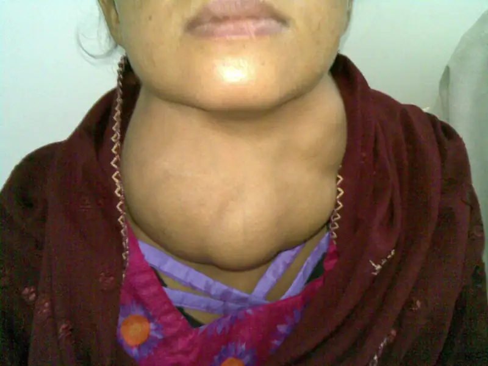
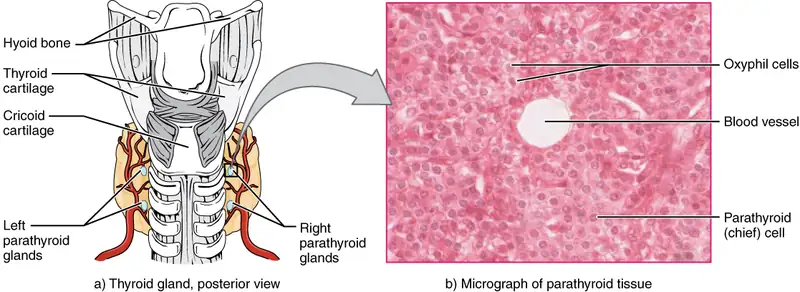

Chapter 17: The Endocrine System¶
Introduction¶
Chapter Outline: Chapter Objectives
After studying this chapter, you will be able to:
- Identify the contributions of the endocrine system to homeostasis
- Discuss the chemical composition of hormones and the mechanisms of hormone action
- Summarize the site of production, regulation, and effects of the hormones of the pituitary, thyroid, parathyroid, adrenal, and pineal glands
- Discuss the hormonal regulation of the reproductive system
- Explain the role of the pancreatic endocrine cells in the regulation of blood glucose
- Identify the hormones released by the heart, kidneys, and other organs with secondary endocrine functions
- Discuss several common diseases associated with endocrine system dysfunction
- Discuss the embryonic development of, and the effects of aging on, the endocrine system
You may never have thought of it this way, but when you send a text message to two friends to meet you at the dining hall at six, you’re sending digital signals that (you hope) will affect their behavior—even though they are some distance away. Similarly, certain cells send chemical signals to other cells in the body that influence their behavior. This long-distance intercellular communication, coordination, and control is critical for homeostasis, and it is the fundamental function of the endocrine system.
17.1 An Overview of the Endocrine System¶
Learning Objectives
By the end of this section, you will be able to:
- Distinguish the types of intercellular communication, their importance, mechanisms, and effects
- Identify the major organs and tissues of the endocrine system and their location in the body
Communication is a process in which a sender transmits signals to one or more receivers to control and coordinate actions. In the human body, two major organ systems participate in relatively “long distance” communication: the nervous system and the endocrine system. Together, these two systems are primarily responsible for maintaining homeostasis in the body.
Neural and Endocrine Signaling¶
The nervous system uses two types of intercellular communication—electrical and chemical signaling—either by the direct action of an electrical potential, or in the latter case, through the action of chemical neurotransmitters such as serotonin or norepinephrine. Neurotransmitters act locally and rapidly. When an electrical signal in the form of an action potential arrives at the synaptic terminal, they diffuse across the synaptic cleft (the gap between a sending neuron and a receiving neuron or muscle cell). Once the neurotransmitters interact (bind) with receptors on the receiving (post-synaptic) cell, the receptor stimulation is transduced into a response such as continued electrical signaling or modification of cellular response. The target cell responds within milliseconds of receiving the chemical “message”; this response then ceases very quickly once the neural signaling ends. In this way, neural communication enables body functions that involve quick, brief actions, such as movement, sensation, and cognition.In contrast, the endocrine system uses just one method of communication: chemical signaling. These signals are sent by the endocrine organs, which secrete chemicals—the hormone—into the extracellular fluid. Hormones are transported primarily via the bloodstream throughout the body, where they bind to receptors on target cells, inducing a characteristic response. As a result, endocrine signaling requires more time than neural signaling to prompt a response in target cells, though the precise amount of time varies with different hormones. For example, the hormones released when you are confronted with a dangerous or frightening situation, called the fight-or-flight response, occur by the release of adrenal hormones—epinephrine and norepinephrine—within seconds. In contrast, it may take up to 48 hours for target cells to respond to certain reproductive hormones.
Interactive
Visit this link to watch an animation of the events that occur when a hormone binds to a cell membrane receptor. What is the secondary messenger made by adenylyl cyclase during the activation of liver cells by epinephrine?
In addition, endocrine signaling is typically less specific than neural signaling. The same hormone may play a role in a variety of different physiological processes depending on the target cells involved. For example, the hormone oxytocin promotes uterine contractions in people in labor. It is also important in breastfeeding, and may be involved in the sexual response and in feelings of emotional attachment in humans.
In general, the nervous system involves quick responses to rapid changes in the external environment, and the endocrine system is usually slower acting—taking care of the internal environment of the body, maintaining homeostasis, and controlling reproduction (Table 17.1). So how does the fight-or-flight response that was mentioned earlier happen so quickly if hormones are usually slower acting? It is because the two systems are connected. It is the fast action of the nervous system in response to the danger in the environment that stimulates the adrenal glands to secrete their hormones. As a result, the nervous system can cause rapid endocrine responses to keep up with sudden changes in both the external and internal environments when necessary.
Table 17.1
| Endocrine and Nervous Systems | ||
|---|---|---|
| Endocrine system | Nervous system | |
| Signaling mechanism(s) | Chemical | Chemical/electrical |
| Primary chemical signal | Hormones | Neurotransmitters |
| Distance traveled | Long or short | Always short |
| Response time | Fast or slow | Always fast |
| Environment targeted | Internal | Internal and external |
Structures of the Endocrine System¶
The endocrine system consists of cells, tissues, and organs that secrete hormones as a primary or secondary function. The endocrine gland is the major player in this system. The primary function of these ductless glands is to secrete their hormones directly into the surrounding fluid. The interstitial fluid and the blood vessels then transport the hormones throughout the body. The endocrine system includes the pituitary, thyroid, parathyroid, adrenal, and pineal glands (Figure 17.2). Some of these glands have both endocrine and non-endocrine functions. For example, the pancreas contains cells that function in digestion as well as cells that secrete the hormones insulin and glucagon, which regulate blood glucose levels. The hypothalamus, thymus, heart, kidneys, stomach, small intestine, liver, skin, ovaries, and testes are other organs that contain cells with endocrine function. Moreover, adipose tissue has long been known to produce hormones, and recent research has revealed that even bone tissue has endocrine functions.
![This diagram shows the endocrine glands and cells that are located throughout the body. The endocrine system organs include the pineal gland and pituitary gland in the brain. The pituitary is located on the anterior side of the hypothalamus while the pineal gland is located on the posterior side of the hypothalamus. The thyroid gland is a butterfly-shaped gland that wraps around the trachea within the neck. Four small, disc-shaped parathyroid glands are embedded into the posterior side of the thyroid. The adrenal glands are located on top of the kidneys. The pancreas is located at the center of the abdomen. In females, the two ovaries are connected to the uterus by two long, curved, tubes in the pelvic region. In males, the two testes are located in the scrotum below the penis.](img/1801-the-endocrine-system.webp)
The ductless endocrine glands are not to be confused with the body’s exocrine system, whose glands release their secretions through ducts. Examples of exocrine glands include the sebaceous and sweat glands of the skin. As just noted, the pancreas also has an exocrine function: most of its cells secrete pancreatic juice through the pancreatic and accessory ducts to the lumen of the small intestine.
Other Types of Chemical Signaling¶
In endocrine signaling, hormones secreted into the extracellular fluid diffuse into the blood or lymph, and can then travel great distances throughout the body. In contrast, autocrine signaling takes place within the same cell. An autocrine (auto- = “self”) is a chemical that elicits a response in the same cell that secreted it. Interleukin-1, or IL-1, is a signaling molecule that plays an important role in inflammatory response. The cells that secrete IL-1 have receptors on their cell surface that bind these molecules, resulting in autocrine signaling.
Local intercellular communication is the province of the paracrine, also called a paracrine factor, which is a chemical that induces a response in neighboring cells. Although paracrines may enter the bloodstream, their concentration is generally too low to elicit a response from distant tissues. A familiar example to those with asthma is histamine, a paracrine that is released by immune cells in the bronchial tree. Histamine causes the smooth muscle cells of the bronchi to constrict, narrowing the airways. Another example is the neurotransmitters of the nervous system, which act only locally within the synaptic cleft.
Career Connection: Endocrinologist
Endocrinology is a specialty in the field of medicine that focuses on the treatment of endocrine system disorders. Endocrinologists—medical doctors who specialize in this field—are experts in treating diseases associated with hormonal systems, ranging from thyroid disease to diabetes mellitus. Endocrine surgeons treat endocrine disease through the removal, or resection, of the affected endocrine gland.
Patients who are referred to endocrinologists may have signs and symptoms or blood test results that suggest excessive or impaired functioning of an endocrine gland or endocrine cells. The endocrinologist may order additional blood tests to determine whether the patient’s hormonal levels are abnormal, or they may stimulate or suppress the function of the suspect endocrine gland and then have blood taken for analysis. Treatment varies according to the diagnosis. Some endocrine disorders, such as type 2 diabetes, may respond to lifestyle changes such as modest weight loss, adoption of a healthy diet, and regular physical activity. Other disorders may require medication, such as hormone replacement, and routine monitoring by the endocrinologist. These include disorders of the pituitary gland that can affect growth and disorders of the thyroid gland that can result in a variety of metabolic problems.
Some patients experience health problems as a result of the normal decline in hormones that can accompany aging. These patients can consult with an endocrinologist to weigh the risks and benefits of hormone replacement therapy intended to boost their natural levels of reproductive hormones.
In addition to treating patients, endocrinologists may be involved in research to improve the understanding of endocrine system disorders and develop new treatments for these diseases.
17.2 Hormones¶
Learning Objectives
By the end of this section, you will be able to:
- Identify the three major classes of hormones on the basis of chemical structure
- Compare and contrast intracellular and cell membrane hormone receptors
- Describe signaling pathways that involve cAMP and IP3
- Identify several factors that influence a target cell’s response
- Discuss the role of feedback loops and humoral, hormonal, and neural stimuli in hormone control
Although a given hormone may travel throughout the body in the bloodstream, it will affect the activity only of its target cells; that is, cells with receptors for that particular hormone. Once the hormone binds to the receptor, a chain of events is initiated that leads to the target cell’s response. Hormones play a critical role in the regulation of physiological processes because of the target cell responses they regulate. These responses contribute to human reproduction, growth and development of body tissues, metabolism, fluid, and electrolyte balance, sleep, and many other body functions. The major hormones of the human body and their effects are identified in Table 17.2.
Table 17.2
| Endocrine Glands and Their Major Hormones | |||
|---|---|---|---|
| Endocrine gland | Associated hormones | Chemical class | Effect |
| Pituitary (anterior) | Growth hormone (GH) | Protein | Promotes growth of body tissues |
| Pituitary (anterior) | Prolactin (PRL) | Peptide | Promotes milk production |
| Pituitary (anterior) | Thyroid-stimulating hormone (TSH) | Glycoprotein | Stimulates thyroid hormone release |
| Pituitary (anterior) | Adrenocorticotropic hormone (ACTH) | Peptide | Stimulates hormone release by adrenal cortex |
| Pituitary (anterior) | Follicle-stimulating hormone (FSH) | Glycoprotein | Stimulates gamete production |
| Pituitary (anterior) | Luteinizing hormone (LH) | Glycoprotein | Stimulates androgen production by gonads |
| Pituitary (posterior) | Antidiuretic hormone (ADH) | Peptide | Stimulates water reabsorption by kidneys |
| Pituitary (posterior) | Oxytocin | Peptide | Stimulates uterine contractions during childbirth |
| Thyroid | Thyroxine (T4), triiodothyronine (T3) | Amine | Stimulate basal metabolic rate |
| Thyroid | Calcitonin | Peptide | Reduces blood Ca2+ levels |
| Parathyroid | Parathyroid hormone (PTH) | Peptide | Increases blood Ca2+levels |
| Adrenal (cortex) | Aldosterone | Steroid | Increases blood Na+ levels |
| Adrenal (cortex) | Cortisol, corticosterone, cortisone | Steroid | Increase blood glucose levels |
| Adrenal (medulla) | Epinephrine, norepinephrine | Amine | Stimulate fight-or-flight response |
| Pineal | Melatonin | Amine | Regulates sleep cycles |
| Pancreas | Insulin | Protein | Reduces blood glucose levels |
| Pancreas | Glucagon | Protein | Increases blood glucose levels |
| Testes | Testosterone | Steroid | Stimulates development of sex characteristics including a deeper voice, increased muscle mass, development of body hair, and sperm production |
| Ovaries | Estrogens and progesterone | Steroid | Stimulate development of sex characteristics including the development of adipose and breast tissue, and prepare the body for childbirth |
Types of Hormones¶
The hormones of the human body can be divided into two major groups on the basis of their chemical structure. Hormones derived from amino acids include amines, peptides, and proteins. Those derived from lipids include steroids (Figure 17.3). These chemical groups affect a hormone’s distribution, the type of receptors it binds to, and other aspects of its function.
![This table shows the chemical structure of amine hormones, peptide hormones, protein hormones, and steroid hormones. Amine hormones are amino acids with modified side groups. The example given is norepinephrine, which contains the NH two group typical of an amino acid, along with a hydroxyl (OH) group. The carboxyl group typical of most amino acids is replaced with a benzene ring, depicted as a hexagon of carbons that are connected by alternating single and double bonds. Peptide hormones are composed of short chains of amino acids. The example given is oxytocin, which has a chain of the following amino acids: GLY, LEU, PRO. The PRO is the bottom of the chain, which connects to a ring of the following amino acids: CYS, CYS, TYR, ILE, GLU, and ASP. Protein hormones are composed of long chains of linked amino acids. The example given is human growth hormone, which is composed of a bundle of amino acid strands, some thread-like, some coiled, and some in flat, folded sheets. Finally, steroid hormones are derived from the lipid cholesterol. Testosterone and progesterone are given as examples, which each contain several hexagonal and pentagonal carbon rings linked together.](img/1802-examples-of-amine-peptide-protein-and-steroid-hormone-structure.webp)
Amine Hormones¶
Hormones derived from the modification of amino acids are referred to as amine hormones. Typically, the original structure of the amino acid is modified such that a –COOH, or carboxyl, group is removed, whereas the \(-\text{NH}_{3}^{+}\), or amine, group remains.
Amine hormones are synthesized from the amino acids tryptophan or tyrosine. An example of a hormone derived from tryptophan is melatonin, which is secreted by the pineal gland and helps regulate circadian rhythm. Tyrosine derivatives include the metabolism-regulating thyroid hormones, as well as the catecholamines, such as epinephrine, norepinephrine, and dopamine. Epinephrine and norepinephrine are secreted by the adrenal medulla and play a role in the fight-or-flight response, whereas dopamine is secreted by the hypothalamus and inhibits the release of certain anterior pituitary hormones.
Peptide and Protein Hormones¶
Whereas the amine hormones are derived from a single amino acid, peptide and protein hormones consist of multiple amino acids that link to form an amino acid chain. Peptide hormones consist of short chains of amino acids, whereas protein hormones are longer polypeptides. Both types are synthesized like other body proteins: DNA is transcribed into mRNA, which is translated into an amino acid chain.
Examples of peptide hormones include antidiuretic hormone (ADH), a pituitary hormone important in fluid balance, and atrial-natriuretic peptide, which is produced by the heart and helps to decrease blood pressure. Some examples of protein hormones include growth hormone, which is produced by the pituitary gland, and follicle-stimulating hormone (FSH), which has an attached carbohydrate group and is thus classified as a glycoprotein. FSH helps stimulate the maturation of eggs in the ovaries and sperm in the testes.
Steroid Hormones¶
The primary hormones derived from lipids are steroids. Steroid hormones are derived from the lipid cholesterol. For example, the reproductive hormones testosterone and the estrogens—which are produced by the gonads (testes and ovaries)—are steroid hormones. The adrenal glands produce the steroid hormone aldosterone, which is involved in osmoregulation, and cortisol, which plays a role in metabolism.
Like cholesterol, steroid hormones are not soluble in water (they are hydrophobic). Because blood is water-based, lipid-derived hormones must travel to their target cell bound to a transport protein. This more complex structure extends the half-life of steroid hormones much longer than that of hormones derived from amino acids. A hormone’s half-life is the time required for half the concentration of the hormone to be degraded. For example, the lipid-derived hormone cortisol has a half-life of approximately 60 to 90 minutes. In contrast, the amino acid–derived hormone epinephrine has a half-life of approximately one minute.
Pathways of Hormone Action¶
The message a hormone sends is received by a hormone receptor, a protein located either inside the cell or within the cell membrane. The receptor will process the message by initiating other signaling events or cellular mechanisms that result in the target cell’s response. Hormone receptors recognize molecules with specific shapes and side groups, and respond only to those hormones that are recognized. The same type of receptor may be located on cells in different body tissues, and trigger somewhat different responses. Thus, the response triggered by a hormone depends not only on the hormone, but also on the target cell.
Once the target cell receives the hormone signal, it can respond in a variety of ways. The response may include the stimulation of protein synthesis, activation or deactivation of enzymes, alteration in the permeability of the cell membrane, altered rates of mitosis and cell growth, and stimulation of the secretion of products. Moreover, a single hormone may be capable of inducing different responses in a given cell.
Pathways Involving Intracellular Hormone Receptors¶
Intracellular hormone receptors are located inside the cell. Hormones that bind to this type of receptor must be able to cross the cell membrane. Steroid hormones are derived from cholesterol and therefore can readily diffuse through the lipid bilayer of the cell membrane to reach the intracellular receptor (Figure 17.4). Thyroid hormones, cross the cell membrane by a specific carrier-mediated mechanism that is energy and Na+ dependent.
The location of steroid and thyroid hormone binding differs slightly: a steroid hormone may bind to its receptor within the cytosol or within the nucleus. In either case, this binding generates a hormone-receptor complex that moves toward the chromatin in the cell nucleus and binds to a particular segment of the cell’s DNA. In contrast, thyroid hormones bind to receptors already bound to DNA. For both steroid and thyroid hormones, binding of the hormone-receptor complex with DNA triggers transcription of a target gene to mRNA, which moves to the cytosol and directs protein synthesis by ribosomes.
![This illustration shows the steps involved with the binding of lipid-soluble hormones. Lipid-soluble hormones, such as steroid hormones, easily diffuse through the cell membrane. The hormone binds to its receptor in the cytosol, forming a receptor-hormone complex. The receptor-hormone complex then enters the nucleus and binds to the target gene on the cell’s DNA. Transcription of the gene creates a messenger RNA that is translated into the desired protein within the cytoplasm. It is these proteins that alter the cell’s activity.](img/1803-binding-of-lipid-soluble-hormones.webp)
Pathways Involving Cell Membrane Hormone Receptors¶
Hydrophilic, or water-soluble, hormones are unable to diffuse through the lipid bilayer of the cell membrane and must therefore pass on their message to a receptor located at the surface of the cell. Except for thyroid hormones, which are lipid-soluble, all amino acid–derived hormones bind to cell membrane receptors that are located, at least in part, on the extracellular surface of the cell membrane. Therefore, they do not directly affect the transcription of target genes, but instead initiate a signaling cascade that is carried out by a molecule called a second messenger. In this case, the hormone is called a first messenger.
The second messenger used by most hormones is cyclic adenosine monophosphate (cAMP). In the cAMP second messenger system, a water-soluble hormone binds to its receptor in the cell membrane (Step 1 in Figure 17.5). This receptor is associated with an intracellular component called a G protein, and binding of the hormone activates the G-protein component (Step 2). The activated G protein in turn activates an enzyme called adenylyl cyclase, also known as adenylate cyclase (Step 3), which converts adenosine triphosphate (ATP) to cAMP (Step 4). As the second messenger, cAMP activates a type of enzyme called a protein kinase that is present in the cytosol (Step 5). Activated protein kinases initiate a phosphorylation cascade, in which multiple protein kinases phosphorylate (add a phosphate group to) numerous and various cellular proteins, including other enzymes (Step 6).
![This illustration shows the binding of water-soluble hormones. Water-soluble hormones cannot diffuse through the cell membrane. These hormones must bind to a receptor on the outer surface of the cell membrane. The receptor then activates a G protein in the cytoplasm, which travels to and activates adenylyl cyclase. Adenylyl cyclase catalyzes the conversion of ATP to CAMP, the secondary messenger in this pathway. CAMP, in turn, activates protein kinases, which phosphorylate proteins in the cytoplasm. This phosphorylation, shown as a P being added to a polypeptide chain, activates the proteins, allowing them to alter cell activity.](img/1804-binding-of-water-soluble-hormones.webp)
The phosphorylation of cellular proteins can trigger a wide variety of effects, from nutrient metabolism to the synthesis of different hormones and other products. The effects vary according to the type of target cell, the G proteins and kinases involved, and the phosphorylation of proteins. Examples of hormones that use cAMP as a second messenger include calcitonin, which is important for bone construction and regulating blood calcium levels; glucagon, which plays a role in blood glucose levels; and thyroid-stimulating hormone, which causes the release of T3 and T4 from the thyroid gland.
Overall, the phosphorylation cascade significantly increases the efficiency, speed, and specificity of the hormonal response, as thousands of signaling events can be initiated simultaneously in response to a very low concentration of hormone in the bloodstream. However, the duration of the hormone signal is short, as cAMP is quickly deactivated by the enzyme phosphodiesterase (PDE), which is located in the cytosol. The action of PDE helps to ensure that a target cell’s response ceases quickly unless new hormones arrive at the cell membrane.
Importantly, there are also G proteins that decrease the levels of cAMP in the cell in response to hormone binding. For example, when growth hormone–inhibiting hormone (GHIH), also known as somatostatin, binds to its receptors in the pituitary gland, the level of cAMP decreases, thereby inhibiting the secretion of human growth hormone.
Not all water-soluble hormones initiate the cAMP second messenger system. One common alternative system uses calcium ions as a second messenger. In this system, G proteins activate the enzyme phospholipase C (PLC), which functions similarly to adenylyl cyclase. Once activated, PLC cleaves a membrane-bound phospholipid into two molecules: diacylglycerol (DAG) and inositol triphosphate (IP3). Like cAMP, DAG activates protein kinases that initiate a phosphorylation cascade. At the same time, IP3 causes calcium ions to be released from storage sites within the cytosol, such as from within the smooth endoplasmic reticulum. The calcium ions then act as second messengers in two ways: they can influence enzymatic and other cellular activities directly, or they can bind to calcium-binding proteins, the most common of which is calmodulin. Upon binding calcium, calmodulin is able to modulate protein kinase within the cell. Examples of hormones that use calcium ions as a second messenger system include angiotensin II, which helps regulate blood pressure through vasoconstriction, and growth hormone–releasing hormone (GHRH), which causes the pituitary gland to release growth hormones.
Factors Affecting Target Cell Response¶
You will recall that target cells must have receptors specific to a given hormone if that hormone is to trigger a response. But several other factors influence the target cell response. For example, the presence of a significant level of a hormone circulating in the bloodstream can cause its target cells to decrease their number of receptors for that hormone. This process is called downregulation, and it allows cells to become less reactive to the excessive hormone levels. When the level of a hormone is chronically reduced, target cells engage in upregulation to increase their number of receptors. This process allows cells to be more sensitive to the hormone that is present. Cells can also alter the sensitivity of the receptors themselves to various hormones.
Two or more hormones can interact to affect the response of cells in a variety of ways. The three most common types of interaction are as follows:
- The permissive effect, in which the presence of one hormone enables another hormone to act. For example, thyroid hormones have complex permissive relationships with certain reproductive hormones. A dietary deficiency of iodine, a component of thyroid hormones, can therefore affect reproductive system development and functioning.
- The synergistic effect, in which two hormones with similar effects produce an amplified response. In some cases, two hormones are required for an adequate response. For example, two different reproductive hormones—FSH from the pituitary gland and estrogens from the ovaries—are required for the maturation of female ova (egg cells).
- The antagonistic effect, in which two hormones have opposing effects. A familiar example is the effect of two pancreatic hormones, insulin and glucagon. Insulin increases the liver’s storage of glucose as glycogen, decreasing blood glucose, whereas glucagon stimulates the breakdown of glycogen stores, increasing blood glucose.
Regulation of Hormone Secretion¶
To prevent abnormal hormone levels and a potential disease state, hormone levels must be tightly controlled. The body maintains this control by balancing hormone production and degradation. Feedback loops govern the initiation and maintenance of most hormone secretion in response to various stimuli.
Role of Feedback Loops¶
The contribution of feedback loops to homeostasis will only be briefly reviewed here. Positive feedback loops are characterized by the release of additional hormone in response to an original hormone release. The release of oxytocin during childbirth is a positive feedback loop. The initial release of oxytocin begins to signal the uterine muscles to contract, which pushes the fetus toward the cervix, causing it to stretch. This, in turn, signals the pituitary gland to release more oxytocin, causing labor contractions to intensify. The release of oxytocin decreases after the birth of the child.
The more common method of hormone regulation is the negative feedback loop. Negative feedback is characterized by the inhibition of further secretion of a hormone in response to adequate levels of that hormone. This allows blood levels of the hormone to be regulated within a narrow range. An example of a negative feedback loop is the release of glucocorticoid hormones from the adrenal glands, as directed by the hypothalamus and pituitary gland. As glucocorticoid concentrations in the blood rise, the hypothalamus and pituitary gland reduce their signaling to the adrenal glands to prevent additional glucocorticoid secretion (Figure 17.6).
![This diagram shows a negative feedback loop using the example of glucocorticoid regulation in the blood. Step 1 in the cycle is when an imbalance occurs. The hypothalamus perceives low blood concentrations of glucocorticoids in the blood. This is illustrated by there being only 5 glucocorticoids floating in a cross section of an artery. Step 2 in the cycle is hormone release, where the hypothalamus releases corticotropin-releasing hormone (CRH). Step 3 is labeled correction. Here, the CRH release starts a hormone cascade that triggers the adrenal gland to release glucocorticoid into the blood. This allows the blood concentration of glucocorticoid to increase, as illustrated by 8 glucocorticoid molecules now being present in the cross section of the artery. Step 4 is labeled negative feedback. Here, the hypothalamus perceives normal concentrations of glucocorticoids in the blood and stops releasing CRH. This brings blood glucocorticoid levels back to homeostasis.](img/1805-negative-feedback-loop.webp)
Role of Endocrine Gland Stimuli¶
Reflexes triggered by both chemical and neural stimuli control endocrine activity. These reflexes may be simple, involving only one hormone response, or they may be more complex and involve many hormones, as is the case with the hypothalamic control of various anterior pituitary–controlled hormones.
Humoral stimuli are changes in blood levels of non-hormone chemicals, such as nutrients or ions, which cause the release or inhibition of a hormone to, in turn, maintain homeostasis. For example, osmoreceptors in the hypothalamus detect changes in blood osmolarity (the concentration of solutes in the blood plasma). If blood osmolarity is too high, meaning that the blood is not dilute enough, osmoreceptors signal the hypothalamus to release ADH. The hormone causes the kidneys to reabsorb more water and reduce the volume of urine produced. This reabsorption causes a reduction of the osmolarity of the blood, diluting the blood to the appropriate level. The regulation of blood glucose is another example. High blood glucose levels cause the release of insulin from the pancreas, which increases glucose uptake by cells and liver storage of glucose as glycogen.
An endocrine gland may also secrete a hormone in response to the presence of another hormone produced by a different endocrine gland. Such hormonal stimuli often involve the hypothalamus, which produces releasing and inhibiting hormones that control the secretion of a variety of pituitary hormones.
In addition to these chemical signals, hormones can also be released in response to neural stimuli. A common example of neural stimuli is the activation of the fight-or-flight response by the sympathetic nervous system. When an individual perceives danger, sympathetic neurons signal the adrenal glands to secrete norepinephrine and epinephrine. The two hormones dilate blood vessels, increase the heart and respiratory rate, and suppress the digestive and immune systems. These responses boost the body’s transport of oxygen to the brain and muscles, thereby improving the body’s ability to fight or flee.
Everyday Connection: Bisphenol A and Endocrine Disruption
You may have heard news reports about the effects of a chemical called bisphenol A (BPA) in various types of food packaging. BPA is used in the manufacturing of hard plastics and epoxy resins. Common food-related items that may contain BPA include the lining of aluminum cans, plastic food-storage containers, drinking cups, as well as baby bottles and “sippy” cups. Other uses of BPA include medical equipment, dental fillings, and the lining of water pipes.
Research suggests that BPA is an endocrine disruptor, meaning that it negatively interferes with the endocrine system, particularly during the prenatal and postnatal development period. In particular, BPA mimics the hormonal effects of estrogens and has the opposite effect—that of androgens. The U.S. Food and Drug Administration (FDA) notes in their statement about BPA safety that although traditional toxicology studies have supported the safety of low levels of exposure to BPA, recent studies using novel approaches to test for subtle effects have led to some concern about the potential effects of BPA on the brain, behavior, and prostate gland in fetuses, infants, and young children. The FDA is currently facilitating decreased use of BPA in food-related materials. Many US companies have voluntarily removed BPA from baby bottles, “sippy” cups, and the linings of infant formula cans, and most plastic reusable water bottles sold today boast that they are “BPA free.” In contrast, both Canada and the European Union have completely banned the use of BPA in baby products.
The potential harmful effects of BPA have been studied in both animal models and humans and include a large variety of health effects, such as developmental delay and disease. For example, prenatal exposure to BPA during the first trimester of human pregnancy may be associated with wheezing and aggressive behavior during childhood. Adults exposed to high levels of BPA may experience altered thyroid signaling and male sexual dysfunction. BPA exposure during the prenatal or postnatal period of development in animal models has been observed to cause neurological delays, changes in brain structure and function, sexual dysfunction, asthma, and increased risk for multiple cancers. In vitro studies have also shown that BPA exposure causes molecular changes that initiate the development of cancers of the breast, prostate, and brain. Although these studies have implicated BPA in numerous ill health effects, some experts caution that some of these studies may be flawed and that more research needs to be done. In the meantime, the FDA recommends that consumers take precautions to limit their exposure to BPA. In addition to purchasing foods in packaging free of BPA, consumers should avoid carrying or storing foods or liquids in bottles with the recycling code 3 or 7. Foods and liquids should not be microwave-heated in any form of plastic: use paper, glass, or ceramics instead.
17.3 The Pituitary Gland and Hypothalamus¶
Learning Objectives
By the end of this section, you will be able to:
- Explain the interrelationships of the anatomy and functions of the hypothalamus and the posterior and anterior lobes of the pituitary gland
- Identify the two hormones released from the posterior pituitary, their target cells, and their principal actions
- Identify the six hormones produced by the anterior lobe of the pituitary gland, their target cells, their principal actions, and their regulation by the hypothalamus
The hypothalamus–pituitary complex can be thought of as the “command center” of the endocrine system. This complex secretes several hormones that directly produce responses in target tissues, as well as hormones that regulate the synthesis and secretion of hormones of other glands. In addition, the hypothalamus–pituitary complex coordinates the messages of the endocrine and nervous systems. In many cases, a stimulus received by the nervous system must pass through the hypothalamus–pituitary complex to be translated into hormones that can initiate a response.
The hypothalamus is a structure of the diencephalon of the brain located anterior and inferior to the thalamus (Figure 17.7). It has both neural and endocrine functions, producing and secreting many hormones. In addition, the hypothalamus is anatomically and functionally related to the pituitary gland (or hypophysis), a bean-sized organ suspended from it by a stem called the infundibulum (or pituitary stalk). The pituitary gland is cradled within the sellaturcica of the sphenoid bone of the skull. It consists of two lobes that arise from distinct parts of embryonic tissue: the posterior pituitary (neurohypophysis) is neural tissue, whereas the anterior pituitary (also known as the adenohypophysis) is glandular tissue that develops from the primitive digestive tract. The hormones secreted by the posterior and anterior pituitary, and the intermediate zone between the lobes are summarized in Table 17.3.
![This illustration shows the hypothalamus-pituitary complex, which is located at the base of the brain and shown here from a lateral view. The hypothalamus lies inferior and anterior to the thalamus, which is sits atop the brainstem. The hypothalamus connects to the pituitary gland by the stalk-like infundibulum. The pituitary gland looks like a sac containing two balls hanging from the infundibulum. The “balls” are the anterior and posterior lobes of the pituitary. Each lobe secretes different hormones in response to signals from the hypothalamus.](img/1806-the-hypothalamus-pituitary-complex.webp)
Table 17.3
| Pituitary Hormones | |||
|---|---|---|---|
| Pituitary lobe | Associated hormones | Chemical class | Effect |
| Anterior | Growth hormone (GH) | Protein | Promotes growth of body tissues |
| Anterior | Prolactin (PRL) | Peptide | Promotes milk production from mammary glands |
| Anterior | Thyroid-stimulating hormone (TSH) | Glycoprotein | Stimulates thyroid hormone release from thyroid |
| Anterior | Adrenocorticotropic hormone (ACTH) | Peptide | Stimulates hormone release by adrenal cortex |
| Anterior | Follicle-stimulating hormone (FSH) | Glycoprotein | Stimulates gamete production in gonads |
| Anterior | Luteinizing hormone (LH) | Glycoprotein | Stimulates androgen production by gonads |
| Posterior | Antidiuretic hormone (ADH) | Peptide | Stimulates water reabsorption by kidneys |
| Posterior | Oxytocin | Peptide | Stimulates uterine contractions during childbirth |
| Intermediate zone | Melanocyte-stimulating hormone | Peptide | Stimulates melanin formation in melanocytes |
Posterior Pituitary¶
The posterior pituitary is actually an extension of the neurons of the paraventricular and supraoptic nuclei of the hypothalamus. The cell bodies of these regions rest in the hypothalamus, but their axons descend as the hypothalamic–hypophyseal tract within the infundibulum, and end in axon terminals that comprise the posterior pituitary (Figure 17.8).
![This illustration zooms in on the hypothalamus and the attached pituitary gland. The posterior pituitary is highlighted. Two nuclei in the hypothalamus contain neurosecretory cells that release different hormones. The neurosecretory cells of the paraventricular nucleus release oxytocin (OT) while the neurosecretory cells of the supraoptic nucleus release anti-diuretic hormone (ADH). The neurosecretory cells stretch down the infundibulum into the posterior pituitary. The tube-like extensions of the neurosecretory cells within the infundibulum are labeled the hypothalamophypophyseal tracts. These tracts connect with a web-like network of blood vessels in the posterior pituitary called the capillary plexus. From the capillary plexus, the posterior pituitary secretes the OT or ADH into a single vein that exits the pituitary.](img/1807-the-posterior-pituitary-complex.webp)
The posterior pituitary gland does not produce hormones, but rather stores and secretes hormones produced by the hypothalamus. The paraventricular nuclei produce the hormone oxytocin, whereas the supraoptic nuclei produce ADH. These hormones travel along the axons into storage sites in the axon terminals of the posterior pituitary. In response to signals from the same hypothalamic neurons, the hormones are released from the axon terminals into the bloodstream.
Oxytocin¶
When fetal development is complete, the peptide-derived hormone oxytocin (tocia- = “childbirth”) stimulates uterine contractions and dilation of the cervix. Throughout most of pregnancy, oxytocin hormone receptors are not expressed at high levels in the uterus. Toward the end of pregnancy, the synthesis of oxytocin receptors in the uterus increases, and the smooth muscle cells of the uterus become more sensitive to its effects. Oxytocin is continually released throughout childbirth through a positive feedback mechanism. As noted earlier, oxytocin prompts uterine contractions that push the fetal head toward the cervix. In response, cervical stretching stimulates additional oxytocin to be synthesized by the hypothalamus and released from the pituitary. This increases the intensity and effectiveness of uterine contractions and prompts additional dilation of the cervix. The feedback loop continues until birth.
Although the high blood levels of oxytocin begin to decrease immediately following birth, oxytocin continues to play a role in female and newborn health. First, oxytocin is necessary for the milk ejection reflex (commonly referred to as “let-down”) in breastfeeding people. As the newborn begins suckling, sensory receptors in the nipples transmit signals to the hypothalamus. In response, oxytocin is secreted and released into the bloodstream. Within seconds, cells in the milk ducts contract, ejecting milk into the infant’s mouth. Secondly, in all people, oxytocin is thought to contribute to parent–newborn bonding, known as attachment. Oxytocin is also thought to be involved in feelings of love and closeness, as well as in the sexual response.
Antidiuretic Hormone (ADH)¶
The solute concentration of the blood, or blood osmolarity, may change in response to the consumption of certain foods and fluids, as well as in response to disease, injury, medications, or other factors. Blood osmolarity is constantly monitored by osmoreceptors—specialized cells within the hypothalamus that are particularly sensitive to the concentration of sodium ions and other solutes.
In response to high blood osmolarity, which can occur during dehydration or following a very salty meal, the osmoreceptors signal the posterior pituitary to release antidiuretic hormone (ADH). The target cells of ADH are located in the tubular cells of the kidneys. Its effect is to increase epithelial permeability to water, allowing increased water reabsorption. The more water reabsorbed from the filtrate, the greater the amount of water that is returned to the blood and the less that is excreted in the urine. A greater concentration of water results in a reduced concentration of solutes. ADH is also known as vasopressin because, in very high concentrations, it causes constriction of blood vessels, which increases blood pressure by increasing peripheral resistance. The release of ADH is controlled by a negative feedback loop. As blood osmolarity decreases, the hypothalamic osmoreceptors sense the change and prompt a corresponding decrease in the secretion of ADH. As a result, less water is reabsorbed from the urine filtrate.
Interestingly, drugs can affect the secretion of ADH. For example, alcohol consumption inhibits the release of ADH, resulting in increased urine production that can eventually lead to dehydration and a hangover. A disease called diabetes insipidus is characterized by chronic underproduction of ADH that causes chronic dehydration. Because little ADH is produced and secreted, not enough water is reabsorbed by the kidneys. Although patients feel thirsty, and increase their fluid consumption, this doesn’t effectively decrease the solute concentration in their blood because ADH levels are not high enough to trigger water reabsorption in the kidneys. Electrolyte imbalances can occur in severe cases of diabetes insipidus.
Anterior Pituitary¶
The anterior pituitary originates from the digestive tract in the embryo and migrates toward the brain during fetal development. There are three regions: the pars distalis is the most anterior, the pars intermedia is adjacent to the posterior pituitary, and the pars tuberalis is a slender “tube” that wraps the infundibulum.
Recall that the posterior pituitary does not synthesize hormones, but merely stores them. In contrast, the anterior pituitary does manufacture hormones. However, the secretion of hormones from the anterior pituitary is regulated by two classes of hormones. These hormones—secreted by the hypothalamus—are the releasing hormones that stimulate the secretion of hormones from the anterior pituitary and the inhibiting hormones that inhibit secretion.
Hypothalamic hormones are secreted by neurons, but enter the anterior pituitary through blood vessels (Figure 17.9). Within the infundibulum is a bridge of capillaries that connects the hypothalamus to the anterior pituitary. This network, called the hypophyseal portal system, allows hypothalamic hormones to be transported to the anterior pituitary without first entering the systemic circulation. The human body has three portal systems: two venous (hypophyseal and hepatic) and one arterial (renal). The hypophyseal portal system originates from the superior hypophyseal artery, which branches off the carotid arteries and transports blood to the hypothalamus. The branches of the superior hypophyseal artery form the hypophyseal portal system (see Figure 17.9). Hypothalamic releasing and inhibiting hormones travel through a primary capillary plexus to the portal veins, which carry them into the anterior pituitary. Hormones produced by the anterior pituitary (in response to releasing hormones) enter a secondary capillary plexus, and from there drain into the circulation.
![This illustration zooms in on the hypothalamus and the attached pituitary gland. The anterior pituitary is highlighted. Three neurosecretory cells are secreting hormones into a web-like network of arteries within the infundibulum. The artery net is labeled the primary capillary plexus of the hypophyseal portal system. The superior hypophysel artery enters the primary capillary plexus from outside of the infundibulum. The hypophyseal portal vein runs down from the primary capillary plexus, through the infundibulum, and connects to the secondary capillary plexus of the hypophyseal portal system. The secondary capillary plexus is located within the anterior pituitary. The hormones released from the neurosecretory cells of the hypothalamus travel through the primary capillary plexus, down the hypophyseal portal vein, and into the secondary capillary plexus. There, the hypothalamus hormones stimulate the anterior pituitary to release its hormones. The anterior pituitary hormones leave the primary capillary plexus from a single vein at the bottom of the anterior lobe.](img/1808-the-anterior-pituitary-complex.webp)
The anterior pituitary produces seven hormones. These are the growth hormone (GH), thyroid-stimulating hormone (TSH), adrenocorticotropic hormone (ACTH), follicle-stimulating hormone (FSH), luteinizing hormone (LH), beta endorphin, and prolactin. Of the hormones of the anterior pituitary, TSH, ACTH, FSH, and LH are collectively referred to as tropic hormones (trope- = “turning”) because they turn on or off the function of other endocrine glands.
Growth Hormone¶
The endocrine system regulates the growth of the human body, protein synthesis, and cellular replication. A major hormone involved in this process is growth hormone (GH), also called somatotropin—a protein hormone produced and secreted by the anterior pituitary gland. Its primary function is anabolic; it promotes protein synthesis and tissue building through direct and indirect mechanisms (Figure 17.10). GH levels are controlled by the release of GHRH and GHIH (also known as somatostatin) from the hypothalamus.
![This flow chart illustrates the hormone cascade that stimulates human growth. In step 1, the hypothalamus releases growth hormone-releasing hormone (GHRH). GHRH travels into the primary capillary plexus of the anterior pituitary, where it stimulates the anterior pituitary to release growth hormone (GH). The release of growth hormone causes three types of effects. In the glucose-sparing effect, GH stimulates adipose cells to break down stored fat, fueling the growth effects (discussed next). The target cells for the glucose-sparing effects are adipose cells. In the growth effects, GH increases the uptake of amino acids from the blood and enhances cellular proliferation while also reducing apoptosis. The target cells for the growth effects are bone cells, muscle cells, nervous system cells, and immune system cells. In the diabetogenic effect, GH stimulates the liver to break down glycogen into glucose, fueling the growth effects. The liver also releases IGF in response to GH. The IGF further stimulates the growth effects but also negatively feeds back to the hypothalamus. When high IGF one levels are perceived by the hypothalamus, it releases growth hormone inhibiting hormone (GHIH). GHIH inhibits GH release by the anterior pituitary.](img/1809-hormonal-regulation-of-growth.webp)
A glucose-sparing effect occurs when GH stimulates lipolysis, or the breakdown of adipose tissue, releasing fatty acids into the blood. As a result, many tissues switch from glucose to fatty acids as their main energy source, which means that less glucose is taken up from the bloodstream.
GH also initiates the diabetogenic effect in which GH stimulates the liver to break down glycogen to glucose, which is then deposited into the blood. The name “diabetogenic” is derived from the similarity in elevated blood glucose levels observed between individuals with untreated diabetes mellitus and individuals experiencing GH excess. Blood glucose levels rise as the result of a combination of glucose-sparing and diabetogenic effects.
GH indirectly mediates growth and protein synthesis by triggering the liver and other tissues to produce a group of proteins called insulin-like growth factors (IGFs). These proteins enhance cellular proliferation and inhibit apoptosis, or programmed cell death. IGFs stimulate cells to increase their uptake of amino acids from the blood for protein synthesis. Skeletal muscle and cartilage cells are particularly sensitive to stimulation from IGFs.
Dysfunction of the endocrine system’s control of growth can result in several disorders. For example, gigantism is a disorder in children that is caused by the secretion of abnormally large amounts of GH, resulting in excessive growth. A similar condition in adults is acromegaly, a disorder that results in the growth of bones in the face, hands, and feet in response to excessive levels of GH in individuals who have stopped growing. Abnormally low levels of GH in children can cause growth impairment—a disorder called pituitary dwarfism (also known as growth hormone deficiency).
Thyroid-Stimulating Hormone¶
The activity of the thyroid gland is regulated by thyroid-stimulating hormone (TSH), also called thyrotropin. TSH is released from the anterior pituitary in response to thyrotropin-releasing hormone (TRH) from the hypothalamus. As discussed shortly, it triggers the secretion of thyroid hormones by the thyroid gland. In a classic negative feedback loop, elevated levels of thyroid hormones in the bloodstream then trigger a drop in production of TRH and subsequently TSH.
Adrenocorticotropic Hormone¶
The adrenocorticotropic hormone (ACTH), also called corticotropin, stimulates the adrenal cortex (the more superficial “bark” of the adrenal glands) to secrete corticosteroid hormones such as cortisol. ACTH come from a precursor molecule known as pro-opiomelanocortin (POMC) which produces several biologically active molecules when cleaved, including ACTH, melanocyte-stimulating hormone, and the brain opioid peptides known as endorphins.
The release of ACTH is regulated by the corticotropin-releasing hormone (CRH) from the hypothalamus in response to normal physiologic rhythms. A variety of stressors can also influence its release, and the role of ACTH in the stress response is discussed later in this chapter.
Follicle-Stimulating Hormone and Luteinizing Hormone¶
The endocrine glands secrete a variety of hormones that control the development and regulation of the reproductive system (these glands include the anterior pituitary, the adrenal cortex, and the gonads—the testes and the ovaries). Much of the development of the reproductive system occurs during puberty and is marked by the development of sex-specific characteristics in adolescents. Puberty is initiated by gonadotropin-releasing hormone (GnRH), a hormone produced and secreted by the hypothalamus. GnRH stimulates the anterior pituitary to secrete gonadotropins—hormones that regulate the function of the gonads. The levels of GnRH are regulated through a negative feedback loop; high levels of reproductive hormones inhibit the release of GnRH. Throughout life, gonadotropins regulate reproductive function and, in the case of females, the onset and cessation of reproductive capacity.
The gonadotropins include two glycoprotein hormones: follicle-stimulating hormone (FSH) stimulates the production and maturation of sex cells, or gametes, including ova and sperm. FSH also promotes follicular growth; these follicles then release estrogens in ovaries. Luteinizing hormone (LH) triggers ovulation, as well as the production of estrogens and progesterone by the ovaries. LH stimulates production of testosterone by the testes.
Prolactin¶
As its name implies, prolactin (PRL) promotes lactation (milk production). During pregnancy, it contributes to development of the mammary glands, and after birth, it stimulates the mammary glands to produce breast milk. However, the effects of prolactin depend heavily upon the permissive effects of estrogens, progesterone, and other hormones. And as noted earlier, the let-down of milk occurs in response to stimulation from oxytocin.
In non-pregnant females, prolactin secretion is inhibited by prolactin-inhibiting hormone (PIH), which is actually the neurotransmitter dopamine, and is released from neurons in the hypothalamus. Only during pregnancy do prolactin levels rise in response to prolactin-releasing hormone (PRH) from the hypothalamus.
Intermediate Pituitary: Melanocyte-Stimulating Hormone¶
The cells in the zone between the pituitary lobes secrete a hormone known as melanocyte-stimulating hormone (MSH) that is formed by cleavage of the pro-opiomelanocortin (POMC) precursor protein. Local production of MSH in the skin is responsible for melanin production in response to UV light exposure. The role of MSH made by the pituitary is more complicated. For instance, people with lighter skin generally have the same amount of MSH as people with darker skin. Nevertheless, this hormone is capable of darkening of the skin by inducing melanin production in the skin’s melanocytes. People also show increased MSH production during pregnancy; in combination with estrogens, it can lead to darker skin pigmentation, especially the skin of the areolas and labia minora. Figure 17.11 is a summary of the pituitary hormones and their principal effects.
![These two diagrammatic tables show the major pituitary hormones, their releasing hormone from the hypothalamus, their target organs, and their effects. The top part of the diagram shows the posterior pituitary hormones. ADH is produced by the hypothalamus and stored in the posterior pituitary. The targets of ADH are the kidneys, sweat glands and circulatory system, as this hormone affects water balance. OT is produced by the posterior pituitary and has no releasing hormone. Its target is the female reproductive system, as this hormone triggers uterine contractions during childbirth. The anterior pituitary hormones are listed in the lower diagram. The release of LH by the anterior pituitary is triggered by the release of GNRH from the hypothalamus. The target of LH is the reproductive system, as this hormone stimulates the production of sex hormones by the gonads. The release of FSH by the anterior pituitary is triggered by the release of GNRH from the hypothalamus. The target of FSH is the reproductive system, as this hormone stimulates the production of sperm and eggs. The release of TSH by the anterior pituitary is triggered by the release of TRH from the hypothalamus. The target of TSH is the thyroid gland, as this hormone stimulates the release of thyroid hormone (TH). TH regulates metabolism. The release of PRL by the anterior pituitary is triggered by the release of PRH and inhibited by the release of PIH from the hypothalamus. The target of PRL is the mammary glands, as this hormone promotes milk production. The release of GH by the anterior pituitary is triggered by the release of GHRH and inhibited by the release of GHIH from the hypothalamus. The targets of GH are the liver, bones and muscles, as it induces its targets to produce insulin-like growth factors (IGH), as this hormone stimulates body growth and a higher metabolic rate. The release of ACTH by the anterior pituitary is triggered by the release of CRH from the hypothalamus. The targets of ACTH are the adrenal glands, as this hormone induces its targets to produce glucocorticoids, which regulate metabolism and the stress response.](img/1810-major-pituitary-hormones.webp)
Interactive
Visit this link to watch an animation showing the role of the hypothalamus and the pituitary gland. Which hormone is released by the pituitary to stimulate the thyroid gland?
17.4 The Thyroid Gland¶
Learning Objectives
By the end of this section, you will be able to:
- Describe the location and anatomy of the thyroid gland
- Discuss the synthesis of triiodothyronine and thyroxine
- Explain the role of thyroid hormones in the regulation of basal metabolism
- Identify the hormone produced by the parafollicular cells of the thyroid
A butterfly-shaped organ, the thyroid gland is located anterior to the trachea, just inferior to the larynx (Figure 17.12). The medial region, called the isthmus, is flanked by wing-shaped left and right lobes. Each of the thyroid lobes are embedded with parathyroid glands, primarily on their posterior surfaces. The tissue of the thyroid gland is composed mostly of thyroid follicles. The follicles are made up of a central cavity filled with a sticky fluid called colloid. Surrounded by a wall of epithelial follicle cells, the colloid is the center of thyroid hormone production, and that production is dependent on the hormones’ essential and unique component: iodine.
![Part A of this figure is a diagram of the anterior view of the thyroid gland. The thyroid gland is a butterfly-shaped gland wrapping around the trachea. It narrows at its center, just under the thyroid cartilage of the larynx. This narrow area is called the isthmus of the thyroid. Two large arteries, the common carotid arteries, run parallel to the trachea on the outer border of the thyroid. A small artery enters the superior edge of the thyroid, near the isthmus, and branches throughout the two “wings” of the thyroid. Part B of this figure is a posterior view of the thyroid. The posterior view shows that the thyroid does not completely wrap around the posterior of the trachea. The posterior sides of the thyroid wings can be seen protruding from under the cricoid cartilage of the larynx. The posterior sides of the thyroid “wings” each contain two small, disc-shaped parathyroid glands embedded in the thyroid tissue. Within each wing, one disc is located superior to the other. These are labeled the left and right parathyroid glands. Just under the inferior parathyroid glands are two arteries that bring blood to the thyroid from the left and right subclavian arteries. Part C of this figure is a micrograph of thyroid tissue. The thyroid follicle cells are cuboidal epithelial cells. These cells form a ring around irregular-shaped cavities called follicles. The follicles contain light colored colloid. A larger parafollicular cell is embedded between two of the follicular cells near the edge of a follicle.](img/1811-the-thyroid-gland.webp)
Synthesis and Release of Thyroid Hormones¶
Hormones are produced in the colloid when atoms of the mineral iodine attach to a glycoprotein, called thyroglobulin, that is secreted into the colloid by the follicle cells. The following steps outline the hormones’ assembly:
- Binding of TSH to its receptors in the follicle cells of the thyroid gland causes the cells to actively transport iodide ions (I–) across their cell membrane, from the bloodstream into the cytosol. As a result, the concentration of iodide ions “trapped” in the follicular cells is many times higher than the concentration in the bloodstream.
- Iodide ions then move to the lumen of the follicle cells that border the colloid. There, the ions undergo oxidation (their negatively charged electrons are removed). The oxidation of two iodide ions (2 I–) results in iodine (I2), which passes through the follicle cell membrane into the colloid.
- In the colloid, peroxidase enzymes link the iodine to the tyrosine amino acids in thyroglobulin to produce two intermediaries: a tyrosine attached to one iodine and a tyrosine attached to two iodines. When one of each of these intermediaries is linked by covalent bonds, the resulting compound is triiodothyronine (T3), a thyroid hormone with three iodines. Much more commonly, two copies of the second intermediary bond, forming tetraiodothyronine, also known as thyroxine (T4), a thyroid hormone with four iodines.
These hormones remain in the colloid center of the thyroid follicles until TSH stimulates endocytosis of colloid back into the follicle cells. There, lysosomal enzymes break apart the thyroglobulin colloid, releasing free T3 and T4, which diffuse across the follicle cell membrane and enter the bloodstream.
In the bloodstream, less than one percent of the circulating T3 and T4 remains unbound. This free T3 and T4 can cross the lipid bilayer of cell membranes and be taken up by cells. The remaining 99 percent of circulating T3 and T4 is bound to specialized transport proteins called thyroxine-binding globulins (TBGs), to albumin, or to other plasma proteins. This “packaging” prevents their free diffusion into body cells. When blood levels of T3 and T4begin to decline, bound T3 and T4 are released from these plasma proteins and readily cross the membrane of target cells. T3 is more potent than T4, and many cells convert T4 to T3 through the removal of an iodine atom.
Regulation of TH Synthesis¶
The release of T3 and T4 from the thyroid gland is regulated by thyroid-stimulating hormone (TSH). As shown in Figure 17.13, low blood levels of T3 and T4 stimulate the release of thyrotropin-releasing hormone (TRH) from the hypothalamus, which triggers secretion of TSH from the anterior pituitary. In turn, TSH stimulates the thyroid gland to secrete T3 and T4. The levels of TRH, TSH, T3, and T4 are regulated by a negative feedback system in which increasing levels of T3 and T4 decrease the production and secretion of TSH.
![This diagram illustrates a negative feedback loop. It shows the general steps of a negative feedback loop at the center (imbalance, hormone release, correction, and negative feedback) using the example of the hormone cascade that regulates metabolic rate. The hypothalamus releases TRH in response to low metabolic rate and or low T three and T four concentrations in the blood (imbalance). This triggers TSH release by the pituitary (hormone release). The TSH travels to the thyroid where it triggers T three and T four release by the thyroid cells. T three and T four increase basal metabolic rate of the body cells and cause a rise in body temperature (the calorigenic effect). T three and T four then feed back to the hypothalamus and inhibits TRH and TSH release. If metabolic rate is high and or T three and T four concentrations are low, then the hypothalamus stops releasing TRH (negative feedback). As a result, the anterior pituitary will not release TSH and no T three or T four will be produced by the thyroid.](img/1813-a-classic-negative-feedback-loop.webp)
Functions of Thyroid Hormones¶
The thyroid hormones, T3 and T4, are often referred to as metabolic hormones because their levels influence the body’s basal metabolic rate, the amount of energy used by the body at rest. When T3 and T4 bind to intracellular receptors located on the mitochondria, they cause an increase in nutrient breakdown and the use of oxygen to produce ATP. In addition, T3 and T4 initiate the transcription of genes involved in glucose oxidation. Although these mechanisms prompt cells to produce more ATP, the process is inefficient, and an abnormally increased level of heat is released as a byproduct of these reactions. This so-called calorigenic effect (calor- = “heat”) raises body temperature.
Adequate levels of thyroid hormones are also required for protein synthesis and for fetal and childhood tissue development and growth. They are especially critical for normal development of the nervous system both in utero and in early childhood, and they continue to support neurological function in adults. As noted earlier, these thyroid hormones have a complex interrelationship with reproductive hormones, and deficiencies can influence libido, fertility, and other aspects of reproductive function. Finally, thyroid hormones increase the body’s sensitivity to catecholamines (epinephrine and norepinephrine) from the adrenal medulla by upregulation of receptors in the blood vessels. When levels of T3 and T4 hormones are excessive, this effect accelerates the heart rate, strengthens the heartbeat, and increases blood pressure. Because thyroid hormones regulate metabolism, heat production, protein synthesis, and many other body functions, thyroid disorders can have severe and widespread consequences.
Disorders of the Endocrine System: Iodine Deficiency, Hypothyroidism, and Hyperthyroidism
As discussed above, dietary iodine is required for the synthesis of T3 and T4. But for much of the world’s population, foods do not provide adequate levels of this mineral, because the amount varies according to the level in the soil in which the food was grown, as well as the irrigation and fertilizers used. Marine fish and shrimp tend to have high levels because they concentrate iodine from seawater, but many people in landlocked regions lack access to seafood. Thus, the primary source of dietary iodine in many countries is iodized salt. Fortification of salt with iodine began in the United States in 1924, and international efforts to iodize salt in the world’s poorest nations continue today.
Dietary iodine deficiency can result in the impaired ability to synthesize T3 and T4, leading to a variety of severe disorders. When T3 and T4 cannot be produced, TSH is secreted in increasing amounts. As a result of this hyperstimulation, thyroglobulin accumulates in the thyroid gland follicles, increasing their deposits of colloid. The accumulation of colloid increases the overall size of the thyroid gland, a condition called a goiter (Figure 17.14). A goiter is only a visible indication of the deficiency. Other iodine deficiency disorders include impaired growth and development, decreased fertility, and prenatal and infant death. Moreover, iodine deficiency is the primary cause of preventable intellectual disabilies worldwide. Neonatal hypothyroidism (cretinism) is characterized by cognitive deficits, short stature, and sometimes deafness and muteness in children and adults born to mothers who were iodine-deficient during pregnancy.

In areas of the world with access to iodized salt, dietary deficiency is rare. Instead, inflammation of the thyroid gland is the more common cause of low blood levels of thyroid hormones. Called hypothyroidism, the condition is characterized by a low metabolic rate, weight gain, cold extremities, constipation, reduced libido, menstrual irregularities, and reduced mental activity. In contrast, hyperthyroidism—an abnormally elevated blood level of thyroid hormones—is often caused by a pituitary or thyroid tumor. In Graves’ disease, the hyperthyroid state results from an autoimmune reaction in which antibodies overstimulate the follicle cells of the thyroid gland. Hyperthyroidism can lead to an increased metabolic rate, excessive body heat and sweating, diarrhea, weight loss, tremors, and increased heart rate. The person’s eyes may bulge (called exophthalmos) as antibodies produce inflammation in the soft tissues of the orbits. The person may also develop a goiter.
Calcitonin¶
The thyroid gland also secretes a hormone called calcitonin that is produced by the parafollicular cells (also called C cells) that stud the tissue between distinct follicles. Calcitonin is released in response to a rise in blood calcium levels. It appears to have a function in decreasing blood calcium concentrations by:
- Inhibiting the activity of osteoclasts, bone cells that release calcium into the circulation by degrading bone matrix
- Increasing osteoblastic activity
- Decreasing calcium absorption in the intestines
- Increasing calcium loss in the urine
However, these functions are usually not significant in maintaining calcium homeostasis, so the importance of calcitonin is not entirely understood. Pharmaceutical preparations of calcitonin are sometimes prescribed to reduce osteoclast activity in people with osteoporosis and to reduce the degradation of cartilage in people with osteoarthritis. The hormones secreted by thyroid are summarized in Table 17.4.
Table 17.4
| Thyroid Hormones | ||
|---|---|---|
| Associated hormones | Chemical class | Effect |
| Thyroxine (T4), triiodothyronine (T3) | Amine | Stimulate basal metabolic rate |
| Calcitonin | Peptide | Reduces blood Ca2+ levels |
Of course, calcium is critical for many other biological processes. It is a second messenger in many signaling pathways, and is essential for muscle contraction, nerve impulse transmission, and blood clotting. Given these roles, it is not surprising that blood calcium levels are tightly regulated by the endocrine system. The organs involved in the regulation are the parathyroid glands.
17.5 The Parathyroid Glands¶
Learning Objectives
By the end of this section, you will be able to:
- Describe the location and structure of the parathyroid glands
- Describe the hormonal control of blood calcium levels
- Discuss the physiological response of parathyroid dysfunction
The parathyroid glands are tiny, round structures usually found embedded in the posterior surface of the thyroid gland (Figure 17.15). A thick connective tissue capsule separates the glands from the thyroid tissue. Most people have four parathyroid glands, but occasionally there are more in tissues of the neck or chest. The function of one type of parathyroid cells, the oxyphil cells, is not clear. The primary functional cells of the parathyroid glands are the chief cells. These epithelial cells produce and secrete the parathyroid hormone (PTH), the major hormone involved in the regulation of blood calcium levels.

Interactive
View the University of Michigan WebScope to explore the tissue sample in greater detail.
The parathyroid glands produce and secrete PTH, a peptide hormone, in response to low blood calcium levels (Figure 17.16). PTH secretion causes the release of calcium from the bones by stimulating osteoclasts, which secrete enzymes that degrade bone and release calcium into the interstitial fluid. PTH also inhibits osteoblasts, the cells involved in bone deposition, thereby sparing blood calcium. PTH causes increased reabsorption of calcium (and magnesium) in the kidney tubules from the urine filtrate. In addition, PTH initiates the production of the steroid hormone calcitriol (also known as 1,25-dihydroxyvitamin D), which is the active form of vitamin D3, in the kidneys. Calcitriol then stimulates increased absorption of dietary calcium by the intestines. A negative feedback loop regulates the levels of PTH, with rising blood calcium levels inhibiting further release of PTH.
![This diagram shows the role of parathyroid hormone in maintaining blood calcium homeostasis. When blood calcium concentration drops, chief cells of the parathyroid gland release parathyroid hormone (PTH). PTH affects bone, the kidneys and the intestines. In regards to bone, PTH inhibits osteoblasts and stimulates osteoclasts. This results in compact bone being broken down, as illustrated by an osteoclast burrowing into the surface of a bone. The break down releases calcium ions into a nearby blood vessel. The osteoblasts are inactive in this stage. In regards to the kidneys, PTH stimulates kidney tubule cells to recover waste calcium from the urine. PTH also stimulates kidney tubule cells to release calcitrol. This is illustrated with a cross section of a kidney tubule, showing the cells of the tubule wall. Urine is running to the left of the tubule wall cells while an artery is to the right. The right edge of the tubule wall cells and the left edge of the artery are separated by a small region of interstitial space. The cells are removing calcium from the urine and pumping it into the interstitial fluid, after which the calcium enters the artery. The cells are also pumping calcitrol into the blood vessel. In regards to the intestine, PTH stimulates the intestines to absorb calcium from digesting food. A cross section of an intestinal cell is shown, which is cube-shaped but with finger-like projections on the intestinal lumen side (top). Beneath the intestinal cell is an artery. Calcitrol is leaving the artery and entering the intestinal cell, stimulating it to absorb calcium from food in the intestinal lumen. The effects of PTH on bone, the kidneys and the intestines all cause blood calcium levels to increase. High calcium concentrations in the blood stimulate the parafollicular cells in the thyroid to release calcitonin. Calcitonin reverses the effects of PTH by stimulating osteoblasts and inhibiting osteoclasts in bone tissue. This is illustrated by calcium ions leaving a blood vessel and traveling to osteoblasts on a section of compact bone. The osteoblasts are thickening the compact bone layer while, in this stage, the osteoclasts are inactive.](img/1817-the-role-of-parathyroid-hormone-in-maintaining-blood-calcium-homeostasis.webp)
Abnormally high activity of the parathyroid gland can cause hyperparathyroidism, a disorder caused by an overproduction of PTH that results in excessive calcium reabsorption from bone. Hyperparathyroidism can significantly decrease bone density, leading to spontaneous fractures or deformities. As blood calcium levels rise, cell membrane permeability to sodium is decreased, and the responsiveness of the nervous system is reduced. At the same time, calcium deposits may collect in the body’s tissues and organs, impairing their functioning.
In contrast, abnormally low blood calcium levels may be caused by parathyroid hormone deficiency, called hypoparathyroidism, which may develop following injury or surgery involving the thyroid gland. Low blood calcium increases membrane permeability to sodium, resulting in muscle twitching, cramping, spasms, or convulsions. Severe deficits can paralyze muscles, including those involved in breathing, and can be fatal.
When blood calcium levels are high, calcitonin is produced and secreted by the parafollicular cells of the thyroid gland. As discussed earlier, calcitonin inhibits the activity of osteoclasts, reduces the absorption of dietary calcium in the intestine, and signals the kidneys to reabsorb less calcium, resulting in larger amounts of calcium excreted in the urine.
17.6 The Adrenal Glands¶
Learning Objectives
By the end of this section, you will be able to:
- Describe the location and structure of the adrenal glands
- Identify the hormones produced by the adrenal cortex and adrenal medulla, and summarize their target cells and effects
The adrenal glands are wedges of glandular and neuroendocrine tissue adhering to the top of the kidneys by a fibrous capsule (Figure 17.17). The adrenal glands have a rich blood supply and experience one of the highest rates of blood flow in the body. They are served by several arteries branching off the aorta, including the suprarenal and renal arteries. Blood flows to each adrenal gland at the adrenal cortex and then drains into the adrenal medulla. Adrenal hormones are released into the circulation via the left and right suprarenal veins.
![This diagram shows the left adrenal gland located atop the left kidney. The gland is composed of an outer cortex and an inner medulla all surrounded by a connective tissue capsule. The cortex can be subdivided into additional zones, all of which produce different types of hormones. The outermost layer is the zona glomerulosa, which releases mineralcorticoids, such as aldosterone, that regulate mineral balance. Underneath this layer is the zona fasciculate, which releases glucocorticoids, such as cortisol, corticosterone and cortisone, that regulate glucose metabolism. Underneath this layer is the zona reticularis, which releases androgens, such as dehydroepiandrosterone, that stimulate masculinization. Below this layer is the adrenal medulla, which releases stress hormones, such as epinephrine and norepinephrine, that stimulate the sympathetic ANS.](img/1818-the-adrenal-glands.webp)
Interactive
View the University of Michigan WebScope to explore the tissue sample in greater detail.
The adrenal gland consists of an outer cortex of glandular tissue and an inner medulla of nervous tissue. The cortex itself is divided into three zones: the zona glomerulosa, the zona fasciculata, and the zona reticularis. Each region secretes its own set of hormones.
The adrenal cortex, as a component of the hypothalamic-pituitary-adrenal (HPA) axis, secretes steroid hormones important for the regulation of the long-term stress response, blood pressure and blood volume, nutrient uptake and storage, fluid and electrolyte balance, and inflammation. The HPA axis involves the stimulation of hormone release of adrenocorticotropic hormone (ACTH) from the pituitary by the hypothalamus. ACTH then stimulates the adrenal cortex to produce the hormone cortisol. This pathway will be discussed in more detail below.
The adrenal medulla is neuroendocrine tissue composed of postganglionic sympathetic nervous system (SNS) neurons. It is really an extension of the autonomic nervous system, which regulates homeostasis in the body. The sympathomedullary (SAM) pathway involves the stimulation of the medulla by impulses from the hypothalamus via neurons from the thoracic spinal cord. The medulla is stimulated to secrete the amine hormones epinephrine and norepinephrine.
One of the major functions of the adrenal gland is to respond to stress. Stress can be either physical or psychological or both. Physical stresses include exposing the body to injury, walking outside in cold and wet conditions without a coat on, or malnutrition. Psychological stresses include the perception of a physical threat, a fight with a loved one, or just a bad day at school.
The body responds in different ways to short-term stress and long-term stress following a pattern known as the general adaptation syndrome (GAS). Stage one of GAS is called the alarm reaction. This is short-term stress, the fight-or-flight response, mediated by the hormones epinephrine and norepinephrine from the adrenal medulla via the SAM pathway. Their function is to prepare the body for extreme physical exertion. Once this stress is relieved, the body quickly returns to normal. The section on the adrenal medulla covers this response in more detail.
If the stress is not soon relieved, the body adapts to the stress in the second stage called the stage of resistance. If a person is starving for example, the body may send signals to the gastrointestinal tract to maximize the absorption of nutrients from food.
If the stress continues for a longer term however, the body responds with symptoms quite different than the fight-or-flight response. During the stage of exhaustion, individuals may begin to suffer depression, the suppression of their immune response, severe fatigue, or even a fatal heart attack. These symptoms are mediated by the hormones of the adrenal cortex, especially cortisol, released as a result of signals from the HPA axis.
Adrenal hormones also have several non–stress-related functions, including the increase of blood sodium and glucose levels, which will be described in detail below.
Adrenal Cortex¶
The adrenal cortex consists of multiple layers of lipid-storing cells that occur in three structurally distinct regions. Each of these regions produces different hormones.
Interactive
Visit this link to view an animation describing the location and function of the adrenal glands. Which hormone produced by the adrenal glands is responsible for the mobilization of energy stores?
Hormones of the Zona Glomerulosa¶
The most superficial region of the adrenal cortex is the zona glomerulosa, which produces a group of hormones collectively referred to as mineralocorticoids because of their effect on body minerals, especially sodium and potassium. These hormones are essential for fluid and electrolyte balance.
Aldosterone is the major mineralocorticoid. It is important in the regulation of the concentration of sodium and potassium ions in urine, sweat, and saliva. For example, it is released in response to elevated blood K+, low blood Na+, low blood pressure, or low blood volume. In response, aldosterone increases the excretion of K+ and the retention of Na+, which in turn increases blood volume and blood pressure. Its secretion is prompted when CRH from the hypothalamus triggers ACTH release from the anterior pituitary.
Aldosterone is also a key component of the renin-angiotensin-aldosterone system (RAAS) in which specialized cells of the kidneys secrete the enzyme renin in response to low blood volume or low blood pressure. Renin then catalyzes the conversion of the blood protein angiotensinogen, produced by the liver, to the hormone angiotensin I. Angiotensin I is converted in the lungs to angiotensin II by angiotensin-converting enzyme (ACE). Angiotensin II has three major functions:
- Initiating vasoconstriction of the arterioles, decreasing blood flow
- Stimulating kidney tubules to reabsorb NaCl and water, increasing blood volume
- Signaling the adrenal cortex to secrete aldosterone, the effects of which further contribute to fluid retention, restoring blood pressure and blood volume
- Stimulating thirst and the desire for salt via the hypothalamus
- Stimulating the release of antidiuretic hormone (ADH) from the posterior pituitary, which causes the kidneys to reabsorb water.
For individuals with hypertension, or high blood pressure, drugs are available that block the production of angiotensin II. These drugs, known as ACE inhibitors, block the ACE enzyme from converting angiotensin I to angiotensin II, thus mitigating the latter’s ability to increase blood pressure.
Hormones of the Zona Fasciculata¶
The intermediate region of the adrenal cortex is the zona fasciculata, named as such because the cells form small fascicles (bundles) separated by tiny blood vessels. The cells of the zona fasciculata produce hormones called glucocorticoids because of their role in glucose metabolism. The most important of these is cortisol, some of which the liver converts to cortisone. A glucocorticoid produced in much smaller amounts is corticosterone. In response to long-term stressors, the hypothalamus secretes CRH, which in turn triggers the release of ACTH by the anterior pituitary. ACTH triggers the release of the glucocorticoids. Their overall effect is to inhibit tissue building while stimulating the breakdown of stored nutrients to maintain adequate fuel supplies. In conditions of long-term stress, for example, cortisol promotes the catabolism of glycogen to glucose, the catabolism of stored triglycerides into fatty acids and glycerol, and the catabolism of muscle proteins into amino acids. These raw materials can then be used to synthesize additional glucose and ketones for use as body fuels. The hippocampus, which is part of the temporal lobe of the cerebral cortices and important in memory formation, is highly sensitive to stress levels because of its many glucocorticoid receptors.
You are probably familiar with prescription and over-the-counter medications containing glucocorticoids, such as cortisone injections into inflamed joints, prednisone tablets and steroid-based inhalers used to manage severe asthma, and hydrocortisone creams applied to relieve itchy rashes. These drugs reflect another role of cortisol—the downregulation of the immune system, which inhibits the inflammatory response.
Hormones of the Zona Reticularis¶
The deepest region of the adrenal cortex is the zona reticularis, which produces small amounts of a class of steroid sex hormones called androgens. During puberty and most of adulthood, androgens are produced in the gonads. The androgens produced in the zona reticularis supplement the gonadal androgens. They are produced in response to ACTH from the anterior pituitary and are converted in the tissues to testosterone or estrogens. In adult females, they may contribute to the sex drive, but their function in adult males is not well understood. In post-menopausal people, as the functions of the ovaries decline, the main source of estrogens becomes the androgens produced by the zona reticularis.
Adrenal Medulla¶
As noted earlier, the adrenal cortex releases glucocorticoids in response to long-term stress such as severe illness. In contrast, the adrenal medulla releases its hormones in response to acute, short-term stress mediated by the sympathetic nervous system (SNS).
The medullary tissue is composed of unique postganglionic SNS neurons called chromaffin cells, which are large and irregularly shaped, and produce the neurotransmitters epinephrine (also called adrenaline) and norepinephrine (or noradrenaline). Epinephrine is produced in greater quantities—approximately a 4 to 1 ratio with norepinephrine—and is the more powerful hormone. Because the chromaffin cells release epinephrine and norepinephrine into the systemic circulation, where they travel widely and exert effects on distant cells, they are considered hormones. Derived from the amino acid tyrosine, they are chemically classified as catecholamines.
The secretion of medullary epinephrine and norepinephrine is controlled by a neural pathway that originates from the hypothalamus in response to danger or stress (the SAM pathway). Both epinephrine and norepinephrine signal the liver and skeletal muscle cells to convert glycogen into glucose, resulting in increased blood glucose levels. These hormones increase the heart rate, pulse, and blood pressure to prepare the body to fight the perceived threat or flee from it. In addition, the pathway dilates the airways, raising blood oxygen levels. It also prompts vasodilation, further increasing the oxygenation of important organs such as the lungs, brain, heart, and skeletal muscle. At the same time, it triggers vasoconstriction to blood vessels serving less essential organs such as the gastrointestinal tract, kidneys, and skin, and downregulates some components of the immune system. Other effects include a dry mouth, loss of appetite, pupil dilation, and a loss of peripheral vision. The major hormones of the adrenal glands are summarized in Table 17.5.
Table 17.5
| Hormones of the Adrenal Glands | |||
|---|---|---|---|
| Adrenal gland | Associated hormones | Chemical class | Effect |
| Adrenal cortex | Aldosterone | Steroid | Increases blood Na+ levels |
| Adrenal cortex | Cortisol, corticosterone, cortisone | Steroid | Increase blood glucose levels |
| Adrenal medulla | Epinephrine, norepinephrine | Amine | Stimulate fight-or-flight response |
Disorders Involving the Adrenal Glands¶
Several disorders are caused by the dysregulation of the hormones produced by the adrenal glands. For example, Cushing’s disease is a disorder characterized by high blood glucose levels and the accumulation of lipid deposits on the face and neck. It is caused by hypersecretion of cortisol. The most common source of Cushing’s disease is a pituitary tumor that secretes cortisol or ACTH in abnormally high amounts. Other common signs of Cushing’s disease include the development of a moon-shaped face, a buffalo hump on the back of the neck, rapid weight gain, and hair loss. Chronically elevated glucose levels are also associated with an elevated risk of developing type 2 diabetes. In addition to hyperglycemia, chronically elevated glucocorticoids compromise immunity, resistance to infection, and memory, and can result in rapid weight gain and hair loss.
In contrast, the hyposecretion of corticosteroids can result in Addison’s disease, a rare disorder that causes low blood glucose levels and low blood sodium levels. The signs and symptoms of Addison’s disease are vague and are typical of other disorders as well, making diagnosis difficult. They may include general weakness, abdominal pain, weight loss, nausea, vomiting, sweating, and cravings for salty food.
17.7 The Pineal Gland¶
Learning Objectives
By the end of this section, you will be able to:
- Describe the location and structure of the pineal gland
- Discuss the function of melatonin
Recall that the hypothalamus, part of the diencephalon of the brain, sits inferior and somewhat anterior to the thalamus. Inferior but somewhat posterior to the thalamus is the pineal gland, a tiny endocrine gland whose functions are not entirely clear. The pinealocyte cells that make up the pineal gland are known to produce and secrete the amine hormone melatonin, which is derived from serotonin.
The secretion of melatonin varies according to the level of light received from the environment. When photons of light stimulate the retinas of the eyes, a nerve impulse is sent to a region of the hypothalamus called the suprachiasmatic nucleus (SCN), which is important in regulating biological rhythms. From the SCN, the nerve signal is carried to the spinal cord and eventually to the pineal gland, where the production of melatonin is inhibited. As a result, blood levels of melatonin fall, promoting wakefulness. In contrast, as light levels decline—such as during the evening—melatonin production increases, boosting blood levels and causing drowsiness.
Interactive
Visit this link to view a presentation describing the function of the hormone melatonin. What should you avoid doing in the middle of your sleep cycle that would lower melatonin?
The secretion of melatonin may influence the body’s circadian rhythms, the dark-light fluctuations that affect not only sleepiness and wakefulness, but also appetite and body temperature. Interestingly, children have higher melatonin levels than adults, which may prevent the release of gonadotropins from the anterior pituitary, thereby inhibiting the onset of puberty. Finally, an antioxidant role of melatonin is the subject of current research.
Jet lag occurs when a person travels across several time zones and feels sleepy during the day or wakeful at night. Traveling across multiple time zones significantly disturbs the light-dark cycle regulated by melatonin. It can take up to several days for melatonin synthesis to adjust to the light-dark patterns in the new environment, resulting in jet lag. Some air travelers take melatonin supplements to induce sleep.
17.8 Gonadal and Placental Hormones¶
Learning Objectives
By the end of this section, you will be able to:
- Identify the most important hormones produced by the testes and ovaries
- Name the hormones produced by the placenta and state their functions
This section briefly discusses the hormonal role of the gonads—the testes and ovaries—which produce the sex cells (sperm and ova) and secrete the gonadal hormones. The roles of the gonadotropins released from the anterior pituitary (FSH and LH) were discussed earlier.
The primary hormone produced by the testes is testosterone, a steroid hormone important in the development of the testicular reproductive system, the maturation of sperm cells, and the development of secondary sex characteristics such as a deepened voice, body hair, and increased muscle mass. Interestingly, testosterone is also produced in the ovaries, but at a much reduced level. In addition, the testes produce the peptide hormone inhibin, which inhibits the secretion of FSH from the anterior pituitary gland. FSH stimulates spermatogenesis.
The primary hormones produced by the ovaries are estrogens, which include estradiol, estriol, and estrone. Estrogens play an important role in a larger number of physiological processes, including the development of the ovarian reproductive system, regulation of the menstrual cycle, the development of secondary sex characteristics such as increased adipose tissue and the development of breast tissue, and the maintenance of pregnancy. Another significant ovarian hormone is progesterone, which contributes to regulation of the menstrual cycle and is important in preparing the body for pregnancy as well as maintaining pregnancy. In addition, the granulosa cells of the ovarian follicles produce inhibin, which inhibits the secretion of FSH.During the initial stages of pregnancy, an organ called the placenta develops within the uterus. The placenta supplies oxygen and nutrients to the fetus, excretes waste products, and produces and secretes estrogens and progesterone. The placenta produces human chorionic gonadotropin (hCG) as well. The hCG hormone promotes progesterone synthesis and reduces the mother’s immune function to protect the fetus from immune rejection. It also secretes human placental lactogen (hPL), which plays a role in preparing the breasts for lactation, and relaxin, which is thought to help soften and widen the pubic symphysis in preparation for childbirth. The hormones controlling reproduction are summarized in Table 17.6.
Table 17.6
| Reproductive Hormones | |||
|---|---|---|---|
| Gonad | Associated hormones | Chemical class | Effect |
| Testes | Testosterone | Steroid | Stimulates development of secondary sex characteristics and sperm production |
| Testes | Inhibin | Protein | Inhibits FSH release from pituitary |
| Ovaries | Estrogens and progesterone | Steroid | Stimulate development of secondary sex characteristics and prepare the body for childbirth |
| Placenta | Human chorionic gonadotropin | Protein | Promotes progesterone synthesis during pregnancy and inhibits immune response against fetus |
Everyday Connection: Anabolic Steroids
The endocrine system can be exploited for illegal or unethical purposes. A prominent example of this is the use of steroid drugs by professional athletes.
Commonly used for performance enhancement, anabolic steroids are synthetic versions of the sex hormone, testosterone. By boosting natural levels of this hormone, athletes experience increased muscle mass. Synthetic versions of human growth hormone are also used to build muscle mass.
The use of performance-enhancing drugs is banned by all major collegiate and professional sports organizations in the United States because they impart an unfair advantage to athletes who take them. In addition, the drugs can cause significant and dangerous side effects. For example, anabolic steroid use can increase cholesterol levels, raise blood pressure, and damage the liver. Altered testosterone levels (both too low or too high) have been implicated in causing structural damage to the heart, and increasing the risk for cardiac arrhythmias, heart attacks, congestive heart failure, and sudden death. Paradoxically, steroids can have effects, including shriveled testicles and enlarged breast tissue. In females, their use can cause effects such as an enlarged clitoris and growth of facial hair. In all people, their use can promote increased aggression (commonly known as “roid-rage”), depression, sleep disturbances, severe acne, and infertility.
17.9 The Endocrine Pancreas¶
Learning Objectives
By the end of this section, you will be able to:
- Describe the location and structure of the pancreas, and the morphology and function of the pancreatic islets
- Compare and contrast the functions of insulin and glucagon
The pancreas is a long, slender organ, most of which is located posterior to the bottom half of the stomach (Figure 17.18). Although it is primarily an exocrine gland, secreting a variety of digestive enzymes, the pancreas has an endocrine function. Its pancreatic islets—clusters of cells formerly known as the islets of Langerhans—secrete the hormones glucagon, insulin, somatostatin, and pancreatic polypeptide (PP).
![This diagram shows the anatomy of the pancreas. The left, larger side of the pancreas is seated within the curve of the duodenum of the small intestine. The smaller, rightmost tip of the pancreas is located near the spleen. The splenic artery is seen travelling to the spleen, however, it has several branches connecting to the pancreas. An interior view of the pancreas shows that the pancreatic duct is a large tube running through the center of the pancreas. It branches throughout its length in to several horseshoe- shaped pockets of acinar cells. These cells secrete digestive enzymes, which travel down the bile duct and into the small intestine. There are also small pancreatic islets scattered throughout the pancreas. The pancreatic islets secrete the pancreatic hormones insulin and glucagon into the splenic artery. An inset micrograph shows that the pancreatic islets are small discs of tissue consisting of a thin, outer ring called the exocrine acinus, a thicker, inner ring of beta cells and a central circle of alpha cells.](img/1820-the-pancreas.webp)
Interactive
View the University of Michigan WebScope to explore the tissue sample in greater detail.
Cells and Secretions of the Pancreatic Islets¶
The pancreatic islets each contain four varieties of cells:
- The alpha cell produces the hormone glucagon and makes up approximately 20 percent of each islet. Glucagon plays an important role in blood glucose regulation; low blood glucose levels stimulate its release.
- The beta cell produces the hormone insulin and makes up approximately 75 percent of each islet. Elevated blood glucose levels stimulate the release of insulin.
- The delta cell accounts for four percent of the islet cells and secretes the peptide hormone somatostatin. Recall that somatostatin is also released by the hypothalamus (as GHIH), and the stomach and intestines also secrete it. An inhibiting hormone, pancreatic somatostatin inhibits the release of both glucagon and insulin.
- The PP cell accounts for about one percent of islet cells and secretes the pancreatic polypeptide hormone. It is thought to play a role in appetite, as well as in the regulation of pancreatic exocrine and endocrine secretions. Pancreatic polypeptide released following a meal may reduce further food consumption; however, it is also released in response to fasting.
Regulation of Blood Glucose Levels by Insulin and Glucagon¶
Glucose is required for cellular respiration and is the preferred fuel for all body cells. The body derives glucose from the breakdown of the carbohydrate-containing foods and drinks we consume. Glucose not immediately taken up by cells for fuel can be stored by the liver and muscles as glycogen, or converted to triglycerides and stored in the adipose tissue. Hormones regulate both the storage and the utilization of glucose as required. Receptors located in the pancreas sense blood glucose levels, and subsequently the pancreatic cells secrete glucagon or insulin to maintain normal levels.
Glucagon¶
Receptors in the pancreas can sense the decline in blood glucose levels, such as during periods of fasting or during prolonged labor or exercise (Figure 17.19). In response, the alpha cells of the pancreas secrete the hormone glucagon, which has several effects:
- It stimulates the liver to convert its stores of glycogen back into glucose. This response is known as glycogenolysis. The glucose is then released into the circulation for use by body cells.
- It stimulates the liver to take up amino acids from the blood and convert them into glucose. This response is known as gluconeogenesis.
- It stimulates lipolysis, the breakdown of stored triglycerides into free fatty acids and glycerol. Some of the free glycerol released into the bloodstream travels to the liver, which converts it into glucose. This is also a form of gluconeogenesis.
Taken together, these actions increase blood glucose levels. The activity of glucagon is regulated through a negative feedback mechanism; rising blood glucose levels inhibit further glucagon production and secretion.
![This diagram shows the homeostatic regulation of blood glucose levels. Blood glucose concentration is tightly maintained between 70 milligrams per deciliter and 110 milligrams per deciliter. If blood glucose concentration rises above this range (hyperglycemia), insulin is released from the pancreas. Insulin triggers body cells to take up glucose from the blood and utilize it in cellular respiration. Insulin also inhibits glycogenolysis, in that glucose is removed from the blood and stored as glycogen in the liver. Insulin also inhibits gluconeogenesis, in that amino acids and free glycerol are not converted to glucose in the ER. If blood glucose concentration drops below this range, glucagon is released, which stimulates body cells to release glucose into the blood. All of these actions cause blood glucose concentration to decrease. When blood glucose concentration is low (hypoglycemia), alpha cells of the pancreas release glucagon. Glucagon inhibits body cells from taking up glucose from the blood and utilizing it in cellular respiration. Glucagon also stimulates glycogenolysis, in that glycogen in the liver is broken down into glucose and released into the blood. Glucagon also stimulates glucogenogenesis, in that amino acids and free glycerol are converted to glucose in the ER and released into the blood. All of these actions cause blood glucose concentrations to increase.](img/1822-the-homostatic-regulation-of-blood-glucose-levels.webp)
Insulin¶
The primary function of insulin is to facilitate the uptake of glucose into body cells. Red blood cells, as well as cells of the brain, liver, kidneys, and the lining of the small intestine, do not have insulin receptors on their cell membranes and do not require insulin for glucose uptake. Although all other body cells do require insulin if they are to take glucose from the bloodstream, skeletal muscle cells and adipose cells are the primary targets of insulin.
The presence of food in the intestine triggers the release of gastrointestinal tract hormones such as glucose-dependent insulinotropic peptide (previously known as gastric inhibitory peptide). This is in turn the initial trigger for insulin production and secretion by the beta cells of the pancreas. Once nutrient absorption occurs, the resulting surge in blood glucose levels further stimulates insulin secretion.
Precisely how insulin facilitates glucose uptake is not entirely clear. However, insulin appears to activate a tyrosine kinase receptor, triggering the phosphorylation of many substrates within the cell. These multiple biochemical reactions converge to support the movement of intracellular vesicles containing facilitative glucose transporters to the cell membrane. In the absence of insulin, these transport proteins are normally recycled slowly between the cell membrane and cell interior. Insulin triggers the rapid movement of a pool of glucose transporter vesicles to the cell membrane, where they fuse and expose the glucose transporters to the extracellular fluid. The transporters then move glucose by facilitated diffusion into the cell interior.
Interactive
Visit this link to view an animation describing the location and function of the pancreas. What goes wrong in the function of insulin in type 2 diabetes?
Insulin also reduces blood glucose levels by stimulating glycolysis, the metabolism of glucose for generation of ATP. Moreover, it stimulates the liver to convert excess glucose into glycogen for storage, and it inhibits enzymes involved in glycogenolysis and gluconeogenesis. Finally, insulin promotes triglyceride and protein synthesis. The secretion of insulin is regulated through a negative feedback mechanism. As blood glucose levels decrease, further insulin release is inhibited. The pancreatic hormones are summarized in Table 17.7.
Table 17.7
| Hormones of the Pancreas | ||
|---|---|---|
| Associated hormones | Chemical class | Effect |
| Insulin (beta cells) | Protein | Reduces blood glucose levels |
| Glucagon (alpha cells) | Protein | Increases blood glucose levels |
| Somatostatin (delta cells) | Protein | Inhibits insulin and glucagon release |
| Pancreatic polypeptide (PP cells) | Protein | Role in appetite |
Disorders of the Endocrine System: Diabetes Mellitus
Dysfunction of insulin production and secretion, as well as the target cells’ responsiveness to insulin, can lead to a condition called diabetes mellitus. An increasingly common disease, diabetes mellitus has been diagnosed in more than 18 million adults in the United States, and more than 200,000 children. It is estimated that up to 7 million more adults have the condition but have not been diagnosed. In addition, approximately 79 million people in the US are estimated to have pre-diabetes, a condition in which blood glucose levels are abnormally high, but not yet high enough to be classified as diabetes.
There are two main forms of diabetes mellitus. Type 1 diabetes is an autoimmune disease affecting the beta cells of the pancreas. Certain genes are recognized to increase susceptibility. The beta cells of people with type 1 diabetes do not produce insulin; thus, synthetic insulin must be administered by injection or infusion. This form of diabetes accounts for less than five percent of all diabetes cases.
Type 2 diabetes accounts for approximately 95 percent of all cases. It is acquired, and lifestyle factors such as poor diet, inactivity, and the presence of pre-diabetes greatly increase a person’s risk. About 80 to 90 percent of people with type 2 diabetes are overweight or obese. In type 2 diabetes, cells become resistant to the effects of insulin. In response, the pancreas increases its insulin secretion, but over time, the beta cells become exhausted. In many cases, type 2 diabetes can be reversed by moderate weight loss, regular physical activity, and consumption of a healthy diet; however, if blood glucose levels cannot be controlled, the person with diabetes will eventually require insulin.
Two of the early manifestations of diabetes are excessive urination and excessive thirst. They demonstrate how the out-of-control levels of glucose in the blood affect kidney function. The kidneys are responsible for filtering glucose from the blood. Excessive blood glucose draws water into the urine, and as a result the person eliminates an abnormally large quantity of sweet urine. The use of body water to dilute the urine leaves the body dehydrated, and so the person is unusually and continually thirsty. The person may also experience persistent hunger because the body cells are unable to access the glucose in the bloodstream.
Over time, persistently high levels of glucose in the blood injure tissues throughout the body, especially those of the blood vessels and nerves. Inflammation and injury of the lining of arteries lead to atherosclerosis and an increased risk of heart attack and stroke. Damage to the microscopic blood vessels of the kidney impairs kidney function and can lead to kidney failure. Damage to blood vessels that serve the eyes can lead to blindness. Blood vessel damage also reduces circulation to the limbs, whereas nerve damage leads to a loss of sensation, called neuropathy, particularly in the hands and feet. Together, these changes increase the risk of injury, infection, and tissue death (necrosis), contributing to a high rate of toe, foot, and lower leg amputations in people with diabetes. Uncontrolled diabetes can also lead to a dangerous form of metabolic acidosis called ketoacidosis. Deprived of glucose, cells increasingly rely on fat stores for fuel. However, in a glucose-deficient state, the liver is forced to use an alternative lipid metabolism pathway that results in the increased production of ketone bodies (or ketones), which are acidic. The build-up of ketones in the blood causes ketoacidosis, which—if left untreated—may lead to a life-threatening “diabetic coma.” Together, these complications make diabetes the seventh leading cause of death in the United States.
Diabetes is diagnosed when lab tests reveal that blood glucose levels are higher than normal, a condition called hyperglycemia. The treatment of diabetes depends on the type, the severity of the condition, and the ability of the patient to make lifestyle changes. As noted earlier, moderate weight loss, regular physical activity, and consumption of a healthful diet can reduce blood glucose levels. Some patients with type 2 diabetes may be unable to control their disease with these lifestyle changes, and will require medication. Historically, the first-line treatment of type 2 diabetes was insulin. Research advances have resulted in alternative options, including medications that enhance pancreatic function.
Interactive
Visit this link to view an animation describing the role of insulin and the pancreas in diabetes.
17.10 Organs with Secondary Endocrine Functions¶
Learning Objectives
By the end of this section, you will be able to:
- Identify the organs with a secondary endocrine function, the hormone they produce, and its effects
In your study of anatomy and physiology, you have already encountered a few of the many organs of the body that have secondary endocrine functions. Here, you will learn about the hormone-producing activities of the heart, gastrointestinal tract, kidneys, skeleton, adipose tissue, skin, and thymus.
Heart¶
When the body experiences an increase in blood volume or pressure, the cells of the heart’s atrial wall stretch. In response, specialized cells in the wall of the atria produce and secrete the peptide hormone atrial natriuretic peptide (ANP). ANP signals the kidneys to reduce sodium reabsorption, thereby decreasing the amount of water reabsorbed from the urine filtrate and reducing blood volume. Other actions of ANP include the inhibition of renin secretion, thus inhibition of the renin-angiotensin-aldosterone system (RAAS) and vasodilation. Therefore, ANP aids in decreasing blood pressure, blood volume, and blood sodium levels.
Gastrointestinal Tract¶
The endocrine cells of the GI tract are located in the mucosa of the stomach and small intestine. Some of these hormones are secreted in response to eating a meal and aid in digestion. An example of a hormone secreted by the stomach cells is gastrin, a peptide hormone secreted in response to stomach distention that stimulates the release of hydrochloric acid. Secretin is a peptide hormone secreted by the small intestine as acidic chyme (partially digested food and fluid) moves from the stomach. It stimulates the release of bicarbonate from the pancreas, which buffers the acidic chyme, and inhibits the further secretion of hydrochloric acid by the stomach. Cholecystokinin (CCK) is another peptide hormone released from the small intestine. It promotes the secretion of pancreatic enzymes and the release of bile from the gallbladder, both of which facilitate digestion. Other hormones produced by the intestinal cells aid in glucose metabolism, such as by stimulating the pancreatic beta cells to secrete insulin, reducing glucagon secretion from the alpha cells, or enhancing cellular sensitivity to insulin.
Kidneys¶
The kidneys participate in several complex endocrine pathways and produce certain hormones. A decline in blood flow to the kidneys stimulates them to release the enzyme renin, triggering the renin-angiotensin-aldosterone (RAAS) system, and stimulating the reabsorption of sodium and water. The reabsorption increases blood flow and blood pressure. The kidneys also play a role in regulating blood calcium levels through the production of calcitriol from vitamin D3, which is released in response to the secretion of parathyroid hormone (PTH). In addition, the kidneys produce the hormone erythropoietin (EPO) in response to low oxygen levels. EPO stimulates the production of red blood cells (erythrocytes) in the bone marrow, thereby increasing oxygen delivery to tissues. You may have heard of EPO as a performance-enhancing drug (in a synthetic form).
Skeleton¶
Although bone has long been recognized as a target for hormones, only recently have researchers recognized that the skeleton itself produces at least two hormones. Fibroblast growth factor 23 (FGF23) is produced by bone cells in response to increased blood levels of vitamin D3 or phosphate. It triggers the kidneys to inhibit the formation of calcitriol from vitamin D3 and to increase phosphorus excretion. Osteocalcin, produced by osteoblasts, stimulates the pancreatic beta cells to increase insulin production. It also acts on peripheral tissues to increase their sensitivity to insulin and their utilization of glucose.
Adipose Tissue¶
Adipose tissue produces and secretes several hormones involved in lipid metabolism and storage. One important example is leptin, a protein manufactured by adipose cells that circulates in amounts directly proportional to levels of body fat. Leptin is released in response to food consumption and acts by binding to brain neurons involved in energy intake and expenditure. Binding of leptin produces a feeling of satiety after a meal, thereby reducing appetite. It also appears that the binding of leptin to brain receptors triggers the sympathetic nervous system to regulate bone metabolism, increasing deposition of cortical bone. Adiponectin—another hormone synthesized by adipose cells—appears to reduce cellular insulin resistance and to protect blood vessels from inflammation and atherosclerosis. Its levels are lower in people who are obese, and rise following weight loss.
Skin¶
The skin functions as an endocrine organ in the production of the inactive form of vitamin D3, cholecalciferol. When cholesterol present in the epidermis is exposed to ultraviolet radiation, it is converted to cholecalciferol, which then enters the blood. In the liver, cholecalciferol is converted to an intermediate that travels to the kidneys and is further converted to calcitriol, the active form of vitamin D3. Vitamin D is important in a variety of physiological processes, including intestinal calcium absorption and immune system function. In some studies, low levels of vitamin D have been associated with increased risks of cancer, severe asthma, and multiple sclerosis. Vitamin D deficiency in children causes rickets, and in adults, osteomalacia—both of which are characterized by bone deterioration.
Thymus¶
The thymus is an organ of the immune system that is larger and more active during infancy and early childhood, and begins to atrophy as we age. Its endocrine function is the production of a group of hormones called thymosins that contribute to the development and differentiation of T lymphocytes, which are immune cells. Although the role of thymosins is not yet well understood, it is clear that they contribute to the immune response. Thymosins have been found in tissues other than the thymus and have a wide variety of functions, so the thymosins cannot be strictly categorized as thymic hormones.
Liver¶
The liver is responsible for secreting at least four important hormones or hormone precursors: insulin-like growth factor (somatomedin), angiotensinogen, thrombopoietin, and hepcidin. Insulin-like growth factor-1 is the immediate stimulus for growth in the body, especially of the bones. Angiotensinogen is the precursor to angiotensin, mentioned earlier, which increases blood pressure. Thrombopoietin stimulates the production of the blood’s platelets. Hepcidins block the release of iron from cells in the body, helping to regulate iron homeostasis in our body fluids. The major hormones of these other organs are summarized in Table 17.8.
Table 17.8
| Organs with Secondary Endocrine Functions and Their Major Hormones | ||
|---|---|---|
| Organ | Major hormones | Effects |
| Heart | Atrial natriuretic peptide (ANP) | Reduces blood volume, blood pressure, and Na+ concentration |
| Gastrointestinal tract | Gastrin, secretin, and cholecystokinin | Aid digestion of food and buffering of stomach acids |
| Gastrointestinal tract | Glucose-dependent insulinotropic peptide (GIP) and glucagon-like peptide 1 (GLP-1) | Stimulate beta cells of the pancreas to release insulin |
| Kidneys | Renin | Stimulates release of aldosterone |
| Kidneys | Calcitriol | Aids in the absorption of Ca2+ |
| Kidneys | Erythropoietin | Triggers the formation of red blood cells in the bone marrow |
| Skeleton | FGF23 | Inhibits production of calcitriol and increases phosphate excretion |
| Skeleton | Osteocalcin | Increases insulin production |
| Adipose tissue | Leptin | Promotes satiety signals in the brain |
| Adipose tissue | Adiponectin | Reduces insulin resistance |
| Skin | Cholecalciferol | Modified to form vitamin D |
| Thymus (and other organs) | Thymosins | Among other things, aids in the development of T lymphocytes of the immune system |
| Liver | Insulin-like growth factor-1 | Stimulates bodily growth |
| Liver | Angiotensinogen | Raises blood pressure |
| Liver | Thrombopoietin | Causes increase in platelets |
| Liver | Hepcidin | Blocks release of iron into body fluids |
17.11 Development and Aging of the Endocrine System¶
Learning Objectives
By the end of this section, you will be able to:
- Describe the embryonic origins of the endocrine system
- Discuss the effects of aging on the endocrine system
The endocrine system arises from all three embryonic germ layers. The endocrine glands that produce the steroid hormones, such as the gonads and adrenal cortex, arise from the mesoderm. In contrast, endocrine glands that arise from the endoderm and ectoderm produce the amine, peptide, and protein hormones. The pituitary gland arises from two distinct areas of the ectoderm: the anterior pituitary gland arises from the oral ectoderm, whereas the posterior pituitary gland arises from the neural ectoderm at the base of the hypothalamus. The pineal gland also arises from the ectoderm. The two structures of the adrenal glands arise from two different germ layers: the adrenal cortex from the mesoderm and the adrenal medulla from ectoderm neural cells. The endoderm gives rise to the thyroid and parathyroid glands, as well as the pancreas and the thymus.
As the body ages, changes occur that affect the endocrine system, sometimes altering the production, secretion, and catabolism of hormones. For example, the structure of the anterior pituitary gland changes as vascularization decreases and the connective tissue content increases with increasing age. This restructuring affects the gland’s hormone production. For example, the amount of human growth hormone that is produced declines with age, resulting in the reduced muscle mass commonly observed in the elderly.
The adrenal glands also undergo changes as the body ages; as fibrous tissue increases, the production of cortisol and aldosterone decreases. Interestingly, the production and secretion of epinephrine and norepinephrine remain normal throughout the aging process.
A well-known example of the aging process affecting an endocrine gland is menopause and the decline of ovarian function. With increasing age, the ovaries decrease in both size and weight and become progressively less sensitive to gonadotropins. This gradually causes a decrease in estrogen and progesterone levels, leading to menopause and the inability to reproduce. Low levels of estrogens and progesterone are also associated with some disease states, such as osteoporosis, atherosclerosis, and hyperlipidemia, or abnormal blood lipid levels.
Testosterone levels also decline with age, a condition called andropause (or viropause); however, this decline is much less dramatic than the decline of estrogens, and much more gradual, rarely affecting sperm production until very old age. Although this means that males maintain their ability to produce offspring for decades longer than females, the quantity, quality, and motility of their sperm is often reduced.
As the body ages, the thyroid gland produces less of the thyroid hormones, causing a gradual decrease in the basal metabolic rate. The lower metabolic rate reduces the production of body heat and increases levels of body fat. Parathyroid hormones, on the other hand, increase with age. This may be because of reduced dietary calcium levels, causing a compensatory increase in parathyroid hormone. However, increased parathyroid hormone levels combined with decreased levels of calcitonin (and estrogens in females) can lead to osteoporosis as PTH stimulates demineralization of bones to increase blood calcium levels. Notice that osteoporosis is common in all elderly people regardless of sex.
Increasing age also affects glucose metabolism, as blood glucose levels spike more rapidly and take longer to return to normal in the elderly. In addition, increasing glucose intolerance may occur because of a gradual decline in cellular insulin sensitivity. Almost 27 percent of Americans aged 65 and older have diabetes.
Chapter Review¶
Key Terms¶
- acromegaly
- disorder in adults caused when abnormally high levels of GH trigger growth of bones in the face, hands, and feet
- adenylyl cyclase
- membrane-bound enzyme that converts ATP to cyclic AMP, creating cAMP, as a result of G-protein activation
- adrenal cortex
- outer region of the adrenal glands consisting of multiple layers of epithelial cells and capillary networks that produces mineralocorticoids and glucocorticoids
- adrenal glands
- endocrine glands located at the top of each kidney that are important for the regulation of the stress response, blood pressure and blood volume, water homeostasis, and electrolyte levels
- adrenal medulla
- inner layer of the adrenal glands that plays an important role in the stress response by producing epinephrine and norepinephrine
- adrenocorticotropic hormone (ACTH)
- anterior pituitary hormone that stimulates the adrenal cortex to secrete corticosteroid hormones (also called corticotropin)
- alarm reaction
- the short-term stress, or the fight-or-flight response, of stage one of the general adaptation syndrome mediated by the hormones epinephrine and norepinephrine
- aldosterone
- hormone produced and secreted by the adrenal cortex that stimulates sodium and fluid retention and increases blood volume and blood pressure
- alpha cell
- pancreatic islet cell type that produces the hormone glucagon
- angiotensin-converting enzyme
- the enzyme that converts angiotensin I to angiotensin II
- antidiuretic hormone (ADH)
- hypothalamic hormone that is stored by the posterior pituitary and that signals the kidneys to reabsorb water
- atrial natriuretic peptide (ANP)
- peptide hormone produced by the walls of the atria in response to high blood pressure, blood volume, or blood sodium that reduces the reabsorption of sodium and water in the kidneys and promotes vasodilation
- autocrine
- chemical signal that elicits a response in the same cell that secreted it
- beta cell
- pancreatic islet cell type that produces the hormone insulin
- calcitonin
- peptide hormone produced and secreted by the parafollicular cells (C cells) of the thyroid gland that functions to decrease blood calcium levels
- chromaffin
- neuroendocrine cells of the adrenal medulla
- colloid
- viscous fluid in the central cavity of thyroid follicles, containing the glycoprotein thyroglobulin
- cortisol
- glucocorticoid important in gluconeogenesis, the catabolism of glycogen, and downregulation of the immune system
- cyclic adenosine monophosphate (cAMP)
- second messenger that, in response to adenylyl cyclase activation, triggers a phosphorylation cascade
- delta cell
- minor cell type in the pancreas that secretes the hormone somatostatin
- diabetes mellitus
- condition caused by destruction or dysfunction of the beta cells of the pancreas or cellular resistance to insulin that results in abnormally high blood glucose levels
- diacylglycerol (DAG)
- molecule that, like cAMP, activates protein kinases, thereby initiating a phosphorylation cascade
- downregulation
- decrease in the number of hormone receptors, typically in response to chronically excessive levels of a hormone
- endocrine gland
- tissue or organ that secretes hormones into the blood and lymph without ducts such that they may be transported to organs distant from the site of secretion
- endocrine system
- cells, tissues, and organs that secrete hormones as a primary or secondary function and play an integral role in normal bodily processes
- epinephrine
- primary and most potent catecholamine hormone secreted by the adrenal medulla in response to short-term stress; also called adrenaline
- erythropoietin (EPO)
- protein hormone secreted in response to low oxygen levels that triggers the bone marrow to produce red blood cells
- estrogens
- class of predominantly female sex hormones important for the development and growth of the female reproductive tract, secondary sex characteristics, the female reproductive cycle, and the maintenance of pregnancy
- exocrine system
- cells, tissues, and organs that secrete substances directly to target tissues via glandular ducts
- first messenger
- hormone that binds to a cell membrane hormone receptor and triggers activation of a second messenger system
- follicle-stimulating hormone (FSH)
- anterior pituitary hormone that stimulates the production and maturation of sex cells
- G protein
- protein associated with a cell membrane hormone receptor that initiates the next step in a second messenger system upon activation by hormone–receptor binding
- general adaptation syndrome (GAS)
- the human body’s three-stage response pattern to short- and long-term stress
- gigantism
- disorder in children caused when abnormally high levels of GH prompt excessive growth
- glucagon
- pancreatic hormone that stimulates the catabolism of glycogen to glucose, thereby increasing blood glucose levels
- glucocorticoids
- hormones produced by the zona fasciculata of the adrenal cortex that influence glucose metabolism
- goiter
- enlargement of the thyroid gland either as a result of iodine deficiency or hyperthyroidism
- gonadotropins
- hormones that regulate the function of the gonads
- growth hormone (GH)
- anterior pituitary hormone that promotes tissue building and influences nutrient metabolism (also called somatotropin)
- hormone
- secretion of an endocrine organ that travels via the bloodstream or lymphatics to induce a response in target cells or tissues in another part of the body
- hormone receptor
- protein within a cell or on the cell membrane that binds a hormone, initiating the target cell response
- hyperglycemia
- abnormally high blood glucose levels
- hyperparathyroidism
- disorder caused by overproduction of PTH that results in abnormally elevated blood calcium
- hyperthyroidism
- clinically abnormal, elevated level of thyroid hormone in the blood; characterized by an increased metabolic rate, excess body heat, sweating, diarrhea, weight loss, and increased heart rate
- hypoparathyroidism
- disorder caused by underproduction of PTH that results in abnormally low blood calcium
- hypophyseal portal system
- network of blood vessels that enables hypothalamic hormones to travel into the anterior lobe of the pituitary without entering the systemic circulation
- hypothalamus
- region of the diencephalon inferior to the thalamus that functions in neural and endocrine signaling
- hypothyroidism
- clinically abnormal, low level of thyroid hormone in the blood; characterized by low metabolic rate, weight gain, cold extremities, constipation, and reduced mental activity
- infundibulum
- stalk containing vasculature and neural tissue that connects the pituitary gland to the hypothalamus (also called the pituitary stalk)
- inhibin
- hormone secreted by the male and female gonads that inhibits FSH production by the anterior pituitary
- inositol triphosphate (IP3)
- molecule that initiates the release of calcium ions from intracellular stores
- insulin
- pancreatic hormone that enhances the cellular uptake and utilization of glucose, thereby decreasing blood glucose levels
- insulin-like growth factors (IGF)
- protein that enhances cellular proliferation, inhibits apoptosis, and stimulates the cellular uptake of amino acids for protein synthesis
- leptin
- protein hormone secreted by adipose tissues in response to food consumption that promotes satiety
- luteinizing hormone (LH)
- anterior pituitary hormone that triggers ovulation and the production of ovarian hormones, and the production of testosterone
- melatonin
- amino acid–derived hormone that is secreted in response to low light and causes drowsiness
- mineralocorticoids
- hormones produced by the zona glomerulosa cells of the adrenal cortex that influence fluid and electrolyte balance
- neonatal hypothyroidism
- condition characterized by cognitive deficits, short stature, and other signs and symptoms in people born to people who were iodine-deficient during pregnancy
- norepinephrine
- secondary catecholamine hormone secreted by the adrenal medulla in response to short-term stress; also called noradrenaline
- osmoreceptor
- hypothalamic sensory receptor that is stimulated by changes in solute concentration (osmotic pressure) in the blood
- oxytocin
- hypothalamic hormone stored in the posterior pituitary gland and important in stimulating uterine contractions in labor, milk ejection during breastfeeding, and feelings of attachment (produced by males and females)
- pancreas
- organ with both exocrine and endocrine functions located posterior to the stomach that is important for digestion and the regulation of blood glucose
- pancreatic islets
- specialized clusters of pancreatic cells that have endocrine functions; also called islets of Langerhans
- paracrine
- chemical signal that elicits a response in neighboring cells; also called paracrine factor
- parathyroid glands
- small, round glands embedded in the posterior thyroid gland that produce parathyroid hormone (PTH)
- parathyroid hormone (PTH)
- peptide hormone produced and secreted by the parathyroid glands in response to low blood calcium levels
- phosphodiesterase (PDE)
- cytosolic enzyme that deactivates and degrades cAMP
- phosphorylation cascade
- signaling event in which multiple protein kinases phosphorylate the next protein substrate by transferring a phosphate group from ATP to the protein
- pineal gland
- endocrine gland that secretes melatonin, which is important in regulating the sleep-wake cycle
- pinealocyte
- cell of the pineal gland that produces and secretes the hormone melatonin
- pituitary dwarfism
- disorder in children caused when abnormally low levels of GH result in growth retardation
- pituitary gland
- bean-sized organ suspended from the hypothalamus that produces, stores, and secretes hormones in response to hypothalamic stimulation (also called hypophysis)
- PP cell
- minor cell type in the pancreas that secretes the hormone pancreatic polypeptide
- progesterone
- predominantly female sex hormone important in regulating the female reproductive cycle and the maintenance of pregnancy
- prolactin (PRL)
- anterior pituitary hormone that promotes development of the mammary glands and the production of breast milk
- protein kinase
- enzyme that initiates a phosphorylation cascade upon activation
- second messenger
- molecule that initiates a signaling cascade in response to hormone binding on a cell membrane receptor and activation of a G protein
- stage of exhaustion
- stage three of the general adaptation syndrome; the body’s long-term response to stress mediated by the hormones of the adrenal cortex
- stage of resistance
- stage two of the general adaptation syndrome; the body’s continued response to stress after stage one diminishes
- testosterone
- steroid hormone secreted by the testes and important in the maturation of sperm cells, growth and development of the reproductive system, and the development of secondary sex characteristics
- thymosins
- hormones produced and secreted by the thymus that play an important role in the development and differentiation of T cells
- thymus
- organ that is involved in the development and maturation of T-cells and is particularly active during infancy and childhood
- thyroid gland
- large endocrine gland responsible for the synthesis of thyroid hormones
- thyroid-stimulating hormone (TSH)
- anterior pituitary hormone that triggers secretion of thyroid hormones by the thyroid gland (also called thyrotropin)
- thyroxine
- (also, tetraiodothyronine, T4) amino acid–derived thyroid hormone that is more abundant but less potent than T3and often converted to T3 by target cells
- triiodothyronine
- (also, T3) amino acid–derived thyroid hormone that is less abundant but more potent than T4
- upregulation
- increase in the number of hormone receptors, typically in response to chronically reduced levels of a hormone
- zona fasciculata
- intermediate region of the adrenal cortex that produce hormones called glucocorticoids
- zona glomerulosa
- most superficial region of the adrenal cortex, which produces the hormones collectively referred to as mineralocorticoids
- zona reticularis
- deepest region of the adrenal cortex, which produces the steroid sex hormones called androgens
Chapter Review¶
17.1 An Overview of the Endocrine System¶
The endocrine system consists of cells, tissues, and organs that secrete hormones critical to homeostasis. The body coordinates its functions through two major types of communication: neural and endocrine. Neural communication includes both electrical and chemical signaling between neurons and target cells. Endocrine communication involves chemical signaling via the release of hormones into the extracellular fluid. From there, hormones diffuse into the bloodstream and may travel to distant body regions, where they elicit a response in target cells. Endocrine glands are ductless glands that secrete hormones. Many organs of the body with other primary functions—such as the heart, stomach, and kidneys—also have hormone-secreting cells.
17.2 Hormones¶
Hormones are derived from amino acids or lipids. Amine hormones originate from the amino acids tryptophan or tyrosine. Larger amino acid hormones include peptides and protein hormones. Steroid hormones are derived from cholesterol.
Steroid hormones and thyroid hormone are lipid soluble. All other amino acid–derived hormones are water soluble. Hydrophobic hormones are able to diffuse through the membrane and interact with an intracellular receptor. In contrast, hydrophilic hormones must interact with cell membrane receptors. These are typically associated with a G protein, which becomes activated when the hormone binds the receptor. This initiates a signaling cascade that involves a second messenger, such as cyclic adenosine monophosphate (cAMP). Second messenger systems greatly amplify the hormone signal, creating a broader, more efficient, and faster response.
Hormones are released upon stimulation that is of either chemical or neural origin. Regulation of hormone release is primarily achieved through negative feedback. Various stimuli may cause the release of hormones, but there are three major types. Humoral stimuli are changes in ion or nutrient levels in the blood. Hormonal stimuli are changes in hormone levels that initiate or inhibit the secretion of another hormone. Finally, a neural stimulus occurs when a nerve impulse prompts the secretion or inhibition of a hormone.
17.3 The Pituitary Gland and Hypothalamus¶
The hypothalamus–pituitary complex is located in the diencephalon of the brain. The hypothalamus and the pituitary gland are connected by a structure called the infundibulum, which contains vasculature and nerve axons. The pituitary gland is divided into two distinct structures with different embryonic origins. The posterior lobe houses the axon terminals of hypothalamic neurons. It stores and releases into the bloodstream two hypothalamic hormones: oxytocin and antidiuretic hormone (ADH). The anterior lobe is connected to the hypothalamus by vasculature in the infundibulum and produces and secretes six hormones. Their secretion is regulated, however, by releasing and inhibiting hormones from the hypothalamus. The six anterior pituitary hormones are: growth hormone (GH), thyroid-stimulating hormone (TSH), adrenocorticotropic hormone (ACTH), follicle-stimulating hormone (FSH), luteinizing hormone (LH), and prolactin (PRL).
17.4 The Thyroid Gland¶
The thyroid gland is a butterfly-shaped organ located in the neck anterior to the trachea. Its hormones regulate basal metabolism, oxygen use, nutrient metabolism, the production of ATP, and calcium homeostasis. They also contribute to protein synthesis and the normal growth and development of body tissues, including maturation of the nervous system, and they increase the body’s sensitivity to catecholamines. The thyroid hormones triiodothyronine (T3) and thyroxine (T4) are produced and secreted by the thyroid gland in response to thyroid-stimulating hormone (TSH) from the anterior pituitary. Synthesis of the amino acid–derived T3 and T4 hormones requires iodine. Insufficient amounts of iodine in the diet can lead to goiter, cretinism, and many other disorders.
17.5 The Parathyroid Glands¶
Calcium is required for a variety of important physiologic processes, including neuromuscular functioning; thus, blood calcium levels are closely regulated. The parathyroid glands are small structures located on the posterior thyroid gland that produce parathyroid hormone (PTH), which regulates blood calcium levels. Low blood calcium levels cause the production and secretion of PTH. In contrast, elevated blood calcium levels inhibit secretion of PTH and trigger secretion of the thyroid hormone calcitonin. Underproduction of PTH can result in hypoparathyroidism. In contrast, overproduction of PTH can result in hyperparathyroidism.
17.6 The Adrenal Glands¶
The adrenal glands, located superior to each kidney, consist of two regions: the adrenal cortex and adrenal medulla. The adrenal cortex—the outer layer of the gland—produces mineralocorticoids, glucocorticoids, and androgens. The adrenal medulla at the core of the gland produces epinephrine and norepinephrine.
The adrenal glands mediate a short-term stress response and a long-term stress response. A perceived threat results in the secretion of epinephrine and norepinephrine from the adrenal medulla, which mediate the fight-or-flight response. The long-term stress response is mediated by the secretion of CRH from the hypothalamus, which triggers ACTH, which in turn stimulates the secretion of corticosteroids from the adrenal cortex. The mineralocorticoids, chiefly aldosterone, cause sodium and fluid retention, which increases blood volume and blood pressure.
17.7 The Pineal Gland¶
The pineal gland is an endocrine structure of the diencephalon of the brain, and is located inferior and posterior to the thalamus. It is made up of pinealocytes. These cells produce and secrete the hormone melatonin in response to low light levels. High blood levels of melatonin induce drowsiness. Jet lag, caused by traveling across several time zones, occurs because melatonin synthesis takes several days to readjust to the light-dark patterns in the new environment.
17.8 Gonadal and Placental Hormones¶
The reproductive system is regulated by follicle-stimulating hormone (FSH) and luteinizing hormone (LH) produced by the anterior lobe of the pituitary gland in response to gonadotropin-releasing hormone (GnRH) from the hypothalamus. FSH stimulates sperm maturation, which is inhibited by the hormone inhibin. The steroid hormone testosterone, a type of androgen, is released in response to LH and is responsible for the maturation and maintenance of the testicular reproductive system, as well as the development of secondary sex characteristics. FSH also promotes egg maturation and LH signals the secretion of the sex hormones, the estrogens and progesterone. Both of these hormones are important in the development and maintenance of the ovarian reproductive system, as well as maintaining pregnancy. The placenta develops during early pregnancy, and secretes several hormones important for maintaining the pregnancy.
17.9 The Endocrine Pancreas¶
The pancreas has both exocrine and endocrine functions. The pancreatic islet cell types include alpha cells, which produce glucagon; beta cells, which produce insulin; delta cells, which produce somatostatin; and PP cells, which produce pancreatic polypeptide. Insulin and glucagon are involved in the regulation of glucose metabolism. Insulin is produced by the beta cells in response to high blood glucose levels. It enhances glucose uptake and utilization by target cells, as well as the storage of excess glucose for later use. Dysfunction of the production of insulin or target cell resistance to the effects of insulin causes diabetes mellitus, a disorder characterized by high blood glucose levels. The hormone glucagon is produced and secreted by the alpha cells of the pancreas in response to low blood glucose levels. Glucagon stimulates mechanisms that increase blood glucose levels, such as the catabolism of glycogen into glucose.
17.10 Organs with Secondary Endocrine Functions¶
Some organs have a secondary endocrine function. For example, the walls of the atria of the heart produce the hormone atrial natriuretic peptide (ANP), the gastrointestinal tract produces the hormones gastrin, secretin, and cholecystokinin, which aid in digestion, and the kidneys produce erythropoietin (EPO), which stimulates the formation of red blood cells. Even bone, adipose tissue, and the skin have secondary endocrine functions.
17.11 Development and Aging of the Endocrine System¶
The endocrine system originates from all three germ layers of the embryo, including the endoderm, ectoderm, and mesoderm. In general, different hormone classes arise from distinct germ layers. Aging affects the endocrine glands, potentially affecting hormone production and secretion, and can cause disease. The production of hormones, such as human growth hormone, cortisol, aldosterone, sex hormones, and the thyroid hormones, decreases with age.
Interactive Link Questions¶
17.1 An Overview of the Endocrine System¶
1. Visit this link to watch an animation of the events that occur when a hormone binds to a cell membrane receptor. What is the secondary messenger made by adenylyl cyclase during the activation of liver cells by epinephrine?
Answer
cAMP
17.3 The Pituitary Gland and Hypothalamus¶
2. Visit this link to watch an animation showing the role of the hypothalamus and the pituitary gland. Which hormone is released by the pituitary to stimulate the thyroid gland?
Answer
Thyroid-stimulating hormone.
17.6 The Adrenal Glands¶
3. Visit this link to view an animation describing the location and function of the adrenal glands. Which hormone produced by the adrenal glands is responsible for mobilization of energy stores?
Answer
Cortisol.
17.7 The Pineal Gland¶
4. Visit this link to view a presentation describing the function of the hormone melatonin. What should you avoid doing in the middle of your sleep cycle that would lower melatonin?
Answer
Turning on the lights.
17.9 The Endocrine Pancreas¶
5. Visit this link to view an animation describing the location and function of the pancreas. What goes wrong in the function of insulin in type 2 diabetes?
Answer
Insulin is overproduced.
Review Questions¶
17.1 An Overview of the Endocrine System¶
6. Endocrine glands ________.
- secrete hormones that travel through a duct to the target organs
- release neurotransmitters into the synaptic cleft
- secrete chemical messengers that travel in the bloodstream
- include sebaceous glands and sweat glands
Answer
C
7. Chemical signaling that affects neighboring cells is called ________.
- autocrine
- paracrine
- endocrine
- neuron
Answer
B
17.2 Hormones¶
8. A newly developed pesticide has been observed to bind to an intracellular hormone receptor. If ingested, residue from this pesticide could disrupt levels of ________.
- melatonin
- thyroid hormone
- growth hormone
- insulin
Answer
B
9. A small molecule binds to a G protein, preventing its activation. What direct effect will this have on signaling that involves cAMP?
- The hormone will not be able to bind to the hormone receptor.
- Adenylyl cyclase will not be activated.
- Excessive quantities of cAMP will be produced.
- The phosphorylation cascade will be initiated.
Answer
B
10. A student is in a car accident, and although not hurt, immediately experiences pupil dilation, increased heart rate, and rapid breathing. What type of endocrine system stimulus did the student receive?
- humoral
- hormonal
- neural
- positive feedback
Answer
C
17.3 The Pituitary Gland and Hypothalamus¶
11. The hypothalamus is functionally and anatomically connected to the posterior pituitary lobe by a bridge of ________.
- blood vessels
- nerve axons
- cartilage
- bone
Answer
B
12. Which of the following is an anterior pituitary hormone?
- ADH
- oxytocin
- TSH
- cortisol
Answer
C
13. How many hormones are produced by the posterior pituitary?
- 0
- 1
- 2
- 6
Answer
A
14. Which of the following hormones contributes to the regulation of the body’s fluid and electrolyte balance?
- adrenocorticotropic hormone
- antidiuretic hormone
- luteinizing hormone
- all of the above
Answer
B
17.4 The Thyroid Gland¶
15. Which of the following statements about the thyroid gland is true?
- It is located anterior to the trachea and inferior to the larynx.
- The parathyroid glands are embedded within it.
- It manufactures three hormones.
- all of the above
Answer
D
16. The secretion of thyroid hormones is controlled by ________.
- TSH from the hypothalamus
- TSH from the anterior pituitary
- thyroxine from the anterior pituitary
- thyroglobulin from the thyroid’s parafollicular cells
Answer
B
17. The development of a goiter indicates that ________.
- the anterior pituitary is abnormally enlarged
- there is hypertrophy of the thyroid’s follicle cells
- there is an excessive accumulation of colloid in the thyroid follicles
- the anterior pituitary is secreting excessive growth hormone
Answer
C
18. Iodide ions cross from the bloodstream into follicle cells via ________.
- simple diffusion
- facilitated diffusion
- active transport
- osmosis
Answer
C
17.5 The Parathyroid Glands¶
19. When blood calcium levels are low, PTH stimulates ________.
- urinary excretion of calcium by the kidneys
- a reduction in calcium absorption from the intestines
- the activity of osteoblasts
- the activity of osteoclasts
Answer
D
20. Which of the following can result from hyperparathyroidism?
- increased bone deposition
- fractures
- convulsions
- all of the above
Answer
B
17.6 The Adrenal Glands¶
21. The adrenal glands are attached superiorly to which organ?
- thyroid
- liver
- kidneys
- hypothalamus
Answer
C
22. What secretory cell type is found in the adrenal medulla?
- chromaffin cells
- neuroglial cells
- follicle cells
- oxyphil cells
Answer
A
23. Cushing’s disease is a disorder caused by ________.
- abnormally low levels of cortisol
- abnormally high levels of cortisol
- abnormally low levels of aldosterone
- abnormally high levels of aldosterone
Answer
B
24. Which of the following responses is not part of the fight-or-flight response?
- pupil dilation
- increased oxygen supply to the lungs
- suppressed digestion
- reduced mental activity
Answer
D
17.7 The Pineal Gland¶
25. What cells secrete melatonin?
- melanocytes
- pinealocytes
- suprachiasmatic nucleus cells
- retinal cells
Answer
B
26. The production of melatonin is inhibited by ________.
- declining levels of light
- exposure to bright light
- the secretion of serotonin
- the activity of pinealocytes
Answer
B
17.8 Gonadal and Placental Hormones¶
27. The gonads produce what class of hormones?
- amine hormones
- peptide hormones
- steroid hormones
- catecholamines
Answer
C
28. The production of FSH by the anterior pituitary is reduced by which hormone?
- estrogens
- progesterone
- relaxin
- inhibin
Answer
D
29. The function of the placental hormone human placental lactogen (hPL) is to ________.
- prepare the breasts for lactation
- nourish the placenta
- regulate the menstrual cycle
- all of the above
Answer
A
17.9 The Endocrine Pancreas¶
30. If an autoimmune disorder targets the alpha cells, production of which hormone would be directly affected?
- somatostatin
- pancreatic polypeptide
- insulin
- glucagon
Answer
D
31. Which of the following statements about insulin is true?
- Insulin acts as a transport protein, carrying glucose across the cell membrane.
- Insulin facilitates the movement of intracellular glucose transporters to the cell membrane.
- Insulin stimulates the breakdown of stored glycogen into glucose.
- Insulin stimulates the kidneys to reabsorb glucose into the bloodstream.
Answer
B
17.10 Organs with Secondary Endocrine Functions¶
32. The walls of the atria produce which hormone?
- cholecystokinin
- atrial natriuretic peptide
- renin
- calcitriol
Answer
B
33. The end result of the RAAS is to ________.
- reduce blood volume
- increase blood glucose
- reduce blood pressure
- increase blood pressure
Answer
D
34. Athletes may take synthetic EPO to boost their ________.
- blood calcium levels
- secretion of growth hormone
- blood oxygen levels
- muscle mass
Answer
C
35. Hormones produced by the thymus play a role in the ________.
- development of T cells
- preparation of the body for childbirth
- regulation of appetite
- release of hydrochloric acid in the stomach
Answer
A
17.11 Development and Aging of the Endocrine System¶
36. The anterior pituitary gland develops from which embryonic germ layer?
- oral ectoderm
- neural ectoderm
- mesoderm
- endoderm
Answer
A
37. In the elderly, decreased thyroid function causes ________.
- increased tolerance for cold
- decreased basal metabolic rate
- decreased body fat
- osteoporosis
Answer
B
Critical Thinking Questions¶
17.1 An Overview of the Endocrine System¶
38. Describe several main differences in the communication methods used by the endocrine system and the nervous system.
Answer
The endocrine system uses chemical signals called hormones to convey information from one part of the body to a distant part of the body. Hormones are released from the endocrine cell into the extracellular environment, but then travel in the bloodstream to target tissues. This communication and response can take seconds to days. In contrast, neurons transmit electrical signals along their axons. At the axon terminal, the electrical signal prompts the release of a chemical signal called a neurotransmitter that carries the message across the synaptic cleft to elicit a response in the neighboring cell. This method of communication is nearly instantaneous, of very brief duration, and is highly specific.
39. Compare and contrast endocrine and exocrine glands.
Answer
Endocrine glands are ductless. They release their secretion into the surrounding fluid, from which it enters the bloodstream or lymph to travel to distant cells. Moreover, the secretions of endocrine glands are hormones. Exocrine glands release their secretions through a duct that delivers the secretion to the target location. Moreover, the secretions of exocrine glands are not hormones, but compounds that have an immediate physiologic function. For example, pancreatic juice contains enzymes that help digest food.
40. True or false: Neurotransmitters are a special class of paracrines. Explain your answer.
Answer
True. Neurotransmitters can be classified as paracrines because, upon their release from a neuron’s axon terminals, they travel across a microscopically small cleft to exert their effect on a nearby neuron or muscle cell.
17.2 Hormones¶
41. Compare and contrast the signaling events involved with the second messengers cAMP and IP3.
Answer
In both cAMP and IP3–calcium signaling, a hormone binds to a cell membrane hormone receptor that is coupled to a G protein. The G protein becomes activated when the hormone binds. In the case of cAMP signaling, the activated G protein activates adenylyl cyclase, which causes ATP to be converted to cAMP. This second messenger can then initiate other signaling events, such as a phosphorylation cascade. In the case of IP3–calcium signaling, the activated G protein activates phospholipase C, which cleaves a membrane phospholipid compound into DAG and IP3. IP3 causes the release of calcium, another second messenger, from intracellular stores. This causes further signaling events.
42. Describe the mechanism of hormone response resulting from the binding of a hormone with an intracellular receptor.
Answer
An intracellular hormone receptor is located within the cell. A hydrophobic hormone diffuses through the cell membrane and binds to the intracellular hormone receptor, which may be in the cytosol or in the cell nucleus. This hormone–receptor complex binds to a segment of DNA. This initiates the transcription of a target gene, the end result of which is protein assembly and the hormonal response.
17.3 The Pituitary Gland and Hypothalamus¶
43. Compare and contrast the anatomical relationship of the anterior and posterior lobes of the pituitary gland to the hypothalamus.
Answer
The anterior lobe of the pituitary gland is connected to the hypothalamus by vasculature, which allows regulating hormones from the hypothalamus to travel to the anterior pituitary. In contrast, the posterior lobe is connected to the hypothalamus by a bridge of nerve axons called the hypothalamic–hypophyseal tract, along which the hypothalamus sends hormones produced by hypothalamic nerve cell bodies to the posterior pituitary for storage and release into the circulation.
44. Name the target tissues for prolactin.
Answer
The mammary glands are the target tissues for prolactin.
17.4 The Thyroid Gland¶
45. Explain why maternal iodine deficiency might lead to neurological impairment in the fetus.
Answer
Iodine deficiency in a pregnant woman would also deprive the fetus. Iodine is required for the synthesis of thyroid hormones, which contribute to fetal growth and development, including maturation of the nervous system. Insufficient amounts would impair these functions.
46. Define hyperthyroidism and explain why one of its symptoms is weight loss.
Answer
Hyperthyroidism is an abnormally elevated blood level of thyroid hormones due to an overproduction of T3 and T4. An individual with hyperthyroidism is likely to lose weight because one of the primary roles of thyroid hormones is to increase the body’s basal metabolic rate, increasing the breakdown of nutrients and the production of ATP.
17.5 The Parathyroid Glands¶
47. Describe the role of negative feedback in the function of the parathyroid gland.
Answer
The production and secretion of PTH is regulated by a negative feedback loop. Low blood calcium levels initiate the production and secretion of PTH. PTH increases bone resorption, calcium absorption from the intestines, and calcium reabsorption by the kidneys. As a result, blood calcium levels begin to rise. This, in turn, inhibits the further production and secretion of PTH.
48. Explain why someone with a parathyroid gland tumor might develop kidney stones.
Answer
A parathyroid gland tumor can prompt hypersecretion of PTH. This can raise blood calcium levels so excessively that calcium deposits begin to accumulate throughout the body, including in the kidney tubules, where they are referred to as kidney stones.
17.6 The Adrenal Glands¶
49. What are the three regions of the adrenal cortex and what hormones do they produce?
Answer
The outer region is the zona glomerulosa, which produces mineralocorticoids such as aldosterone; the next region is the zona fasciculata, which produces glucocorticoids such as cortisol; the inner region is the zona reticularis, which produces androgens.
50. If innervation to the adrenal medulla were disrupted, what would be the physiological outcome?
Answer
Damage to the innervation of the adrenal medulla would prevent the adrenal glands from responding to the hypothalamus during the fight-or-flight response. Therefore, the response would be reduced.
51. Compare and contrast the short-term and long-term stress response.
Answer
The short-term stress response involves the hormones epinephrine and norepinephrine, which work to increase the oxygen supply to organs important for extreme muscular action such as the brain, lungs, and muscles. In the long-term stress response, the hormone cortisol is involved in catabolism of glycogen stores, proteins, and triglycerides, glucose and ketone synthesis, and downregulation of the immune system.
17.7 The Pineal Gland¶
52. Seasonal affective disorder (SAD) is a mood disorder characterized by, among other symptoms, increased appetite, sluggishness, and increased sleepiness. It occurs most commonly during the winter months, especially in regions with long winter nights. Propose a role for melatonin in SAD and a possible non-drug therapy.
Answer
SAD is thought to occur in part because low levels and duration of sunlight allow excessive and prolonged secretion of melatonin. Light therapy—daytime exposure to very bright lighting—is one common therapy.
53. Retinitis pigmentosa (RP) is a disease that causes deterioration of the retinas of the eyes. Describe the impact RP would have on melatonin levels.
Answer
The retina is important for melatonin production because it senses light. Bright light inhibits the production of melatonin, whereas low light levels promote the production of melatonin. Therefore, deterioration of the retinas would most likely disturb the sleep-wake pattern because melatonin production would be elevated.
17.8 Gonadal and Placental Hormones¶
54. Compare and contrast the role of estrogens and progesterone.
Answer
Both estrogens and progesterone are steroid hormones produced by the ovaries that help regulate the menstrual cycle. Estrogens play an important role in the development of the female reproductive tract and secondary sex characteristics. They also help maintain pregnancy. Progesterone prepares the body for pregnancy and helps maintain pregnancy.
55. Describe the role of placental secretion of relaxin in preparation for childbirth.
Answer
Relaxin produced by the placenta is thought to soften and widen the pubic symphysis. This increases the size of the pelvic outlet, the birth canal through which the fetus passes during vaginal childbirth.
17.9 The Endocrine Pancreas¶
56. What would be the physiological consequence of a disease that destroyed the beta cells of the pancreas?
Answer
The beta cells produce the hormone insulin, which is important in the regulation of blood glucose levels. All insulin-dependent cells of the body require insulin in order to take up glucose from the bloodstream. Destruction of the beta cells would result in an inability to produce and secrete insulin, leading to abnormally high blood glucose levels and the disease called type 1 diabetes mellitus.
57. Why is foot care extremely important for people with diabetes mellitus?
Answer
Excessive blood glucose levels damage the blood vessels and nerves of the body’s extremities, increasing the risk for injury, infection, and tissue death. Loss of sensation to the feet means that a diabetic patient will not be able to feel foot trauma, such as from ill-fitting shoes. Even minor injuries commonly lead to infection, which , can progress to tissue death without proper care, requiring amputation.
17.10 Organs with Secondary Endocrine Functions¶
58. Summarize the role of GI tract hormones following a meal.
Answer
The presence of food in the GI tract stimulates the release of hormones that aid in digestion. For example, gastrin is secreted in response to stomach distention and causes the release of hydrochloric acid in the stomach. Secretin is secreted when acidic chyme enters the small intestine, and stimulates the release of pancreatic bicarbonate. In the presence of fat and protein in the duodenum, CCK stimulates the release of pancreatic digestive enzymes and bile from the gallbladder. Other GI tract hormones aid in glucose metabolism and other functions.
59. Compare and contrast the thymus gland in infancy and adulthood.
Answer
The thymus gland is important for the development and maturation of T cells. During infancy and early childhood, the thymus gland is large and very active, as the immune system is still developing. During adulthood, the thymus gland atrophies because the immune system is already developed.
17.11 Development and Aging of the Endocrine System¶
60. Distinguish between the effects of menopause and andropause on fertility.
Answer
Menopause occurs as the result of a progressive decline in the function of the ovaries, resulting in low estrogen and progesterone levels. Ovulation ceases, and postmenopausal woman can no longer conceive a child. In contrast, andropause is a much more gradual and subtle decline in testosterone levels and functioning. A man typically maintains fertility until very old age, although the quantity, quality, and motility of the sperm he produces may be reduced.
Adapted from Anatomy and Physiology 2e by OpenStax, licensed under CC BY 4.0. Access the original for free at openstax.org. Changes: converted to the web reading format of The Open Book Project.